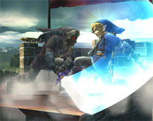

If you press the NED button when the demo is playing a noise(could be the blooup from a homing drone or a switch) that noise is looped for ages. That could be the problem.
This is cool 
Can I be a dark blue guy in the caves just about to touch a mine. Like touching it as if i've never seen it b4 please.
Name is DW40. Any font. THNX
Can I be a dark blue guy in the caves just about to touch a mine. Like touching it as if i've never seen it b4 please.
Name is DW40. Any font. THNX
I've been trying for ages to create a user. It just says 'waiting for server response' then 'error:' but it dosen't say what the error is. Please help me!! I've got lots of levels redy for uploading.
Might be because I use a LAN to connect to the internet
(Local Area Connection)
Might be because I use a LAN to connect to the internet
(Local Area Connection)
Thnx everyone (slightly less to Tsukatu). Changing Firewall settings now.
 .......... Noooooooo!!
.......... Noooooooo!! 
Still not working and I have tried on two computers!
I'm desperate to get on.

.......... Noooooooo!! Still not working and I have tried on two computers!
I'm desperate to get on.
hey thnx
Please can u make two userbars for me.
1. Avenged Sevenfold (but shorten to A7X)
Brown
Picture of A7X Deathbat logo
2. Scottish!
Blue
Picture of scottish flag
Thnx. These userbars are cool.
1. Avenged Sevenfold (but shorten to A7X)
Brown
Picture of A7X Deathbat logo
2. Scottish!
Blue
Picture of scottish flag
Thnx. These userbars are cool.
Woo! These rock! Thnx. 
Babies if you forget contraception, woops.

I was wondering if anyone can help me because I can't create a user to submit my maps to NUMA because I get a message saying ERROR: and I can't change my Firewall settings  . Please could you create a user for me on your computer?
. Please could you create a user for me on your computer? 
If somebody is willing to help then please PM me and I'll tell you the details...
...and if no one can help me then I'm screwed because I have made lots of maps for no reason.
Please, please.
. Please could you create a user for me on your computer? If somebody is willing to help then please PM me and I'll tell you the details...
...and if no one can help me then I'm screwed because I have made lots of maps for no reason.
Please, please.
Yeah, uNcoNditioNal, you're right. Time for me to write an e-mail, or type... whatever. 
No Exuberance. This is different! That's about logging in. I've been having this problem since a few months back when I got the game. I can't create a user.
On your first map.. Are the trap door switches meant to be avoided? It dosen't matter if you hit them or not because you'll still reach the exit.
Other than that and the gold placement it's a pretty good, fun map.
As for the second map, you might want to delete the NaN on the rocket. The door switch to the right, above the launchpad isn't needed.
546:17895697|17895697|17895697|17895697|17895697|219222289|89478485|89478485|89478485|17895697|17895697|17895697|17895697|17895697|89985297|97587541|107365444|71591526|71582788|71582788|4473924|17895680|4369|17891328|1|0|0|0|35782656|35791394|107405858|107374182|107374182|35792486|35791394|35791394|8738|71582912|71582788|107374180|35791462|35791394|35791394|89478222|89478485|89478485|89478485|17895765|89478609|17895697|17|35791392|35791394|35791394|8738|0|0|0|0|0|0|139264|0|35782656|35791394|17891330|17895697|17895697|0|17895696|17895697|33558801|35791394|35791394|35791394|35791394|35791394|35791394|0( replace '&# 58;' with : )
Other than that and the gold placement it's a pretty good, fun map.
As for the second map, you might want to delete the NaN on the rocket. The door switch to the right, above the launchpad isn't needed.
gets a headache and you wake up in the middle of a parking lot with a police offilcer prodding at you withh his hitty thing.
*inserts a rubber band painted yellow and by yellow I mean pink*
*inserts a rubber band painted yellow and by yellow I mean pink*
Tyrannosaurs in F14s
I made this map but I don't want to submit it to NUMA so here you go. It's just a short jokey type thing.
I think it's great. I suppose it's kinda N art.
Works around 95% of the time.
I think it's great. I suppose it's kinda N art.
Works around 95% of the time.
That map was the one that gave me the idea. I just went further.
EDIT: plus my one comes out whole, no it parts.
EDIT: plus my one comes out whole, no it parts.
PM'd you my level aswell.
BTW, what's it for? A levelpack or something.
BTW, what's it for? A levelpack or something.
That would be great, sounds really fun.
And you get points for hitting off things and spectacular deaths.
And you get points for hitting off things and spectacular deaths.
Yes! it's perfect, actually that's where I got my name - from WD40 but with my initials.
Thanks.
Thanks.
I've fixed it. And to everyone who thought it was the server problems you were wrong. I've had this problem before the server trouble.
Anyway i am happyhappyhappy now
Anyway i am happyhappyhappy now
No it's not the same problem as what you are saying, I had this problem since a couple months back.
Anyway, it's been fixed so
Anyway, it's been fixed so
Well I had to mess around with my computer settings for hours until I finally fixed it but now I can't remember what I did. 
Just so I know what the majority of people do.
I just noticed  - you typed my name as WD40 instead of DW40. Please could you change it?
- you typed my name as WD40 instead of DW40. Please could you change it?
- you typed my name as WD40 instead of DW40. Please could you change it? Sorry for double post
Sorry for double post When I started this poll I went to the right (I am right handed) but now I seem to find myself heading left. It feels sort of... fresh. I don't know what word to use.
Rated 'Free! (by alexthegolem)' 4/5
Please, I need one more rating here-
http://numa.notdot.net/map/81088
Please, I need one more rating here-
http://numa.notdot.net/map/81088
I've wished this for ages.
It would be a great addition to N
It would be a great addition to N
I completed N recently and I looked in the options and went hooray
I didn't think it was that exciting to be able to *skeeewaaaaaa blip waroooomagarara*.
I thought the first secret was better.
I didn't think it was that exciting to be able to *skeeewaaaaaa blip waroooomagarara*.
I thought the first secret was better.
Please expand on your answer here -
*agrees*
I'm going to use 5 smilies for that last post -


Hah, no you don't. Just use Ned the in-game level editor. Not much skill required unless you want to make a good level. Then it takes loads of skill.
If you add a new drone, the platform drone, then yeah, that would be awesome.
However, they should be square because jumping off of small octagons would be very fiddly.
I whipped this pic up in MSPaint. I was thinking, wouldn't it be cool if they interacted with each other as shown in my pic. It would be great for puzzles and maybe we could have DRONE eeries and stuff. If the ninja is caught in between to colliding drones then the ninja could be squished.
As for your second idea.... No.
However, they should be square because jumping off of small octagons would be very fiddly.
I whipped this pic up in MSPaint. I was thinking, wouldn't it be cool if they interacted with each other as shown in my pic. It would be great for puzzles and maybe we could have DRONE eeries and stuff. If the ninja is caught in between to colliding drones then the ninja could be squished.
As for your second idea.... No.
I'm really just not feelin' the new NUMA. Really not.
The tag system is horrible but I do rather like the new look.
The tag system is horrible but I do rather like the new look.
...first of all dropped the unicorn in the sewers to...
...inserting spikes in their many orifices which determines...
Animal Farm
Oh, yes.
So... umm... you've not finished all the levels... umm. That's quite hard to... umm...
Is it just me or are Banjo-Kazooie and Banjo-Tooie (both for N64) two of the best games of all time? I can't get enough of them.
Yeah, I'm still playing my N64
My best 100% time on BK = 3:15
My best non 100% on BK = 2:47
My best BT time = 5:37
Anybody? Who remembers these games? Who has played these games? Who loves these games?
I do.
Yeah, I'm still playing my N64
My best 100% time on BK = 3:15
My best non 100% on BK = 2:47
My best BT time = 5:37
Anybody? Who remembers these games? Who has played these games? Who loves these games?
I do.
Girls
Girls rock.
Girls rock.
Just fire your eggs fast and if you are just about to get hit and can't save yourself put wonderwing invincibility on (if you happen to have gold feathers on you). Also, you might want to fill in that double health bar jigsaw and get every hollow honeycomb if you haven't already.
A brilliant youtube link 4 U -
http://www.youtube.com/watch?v=xPPwUl4a5f4
A brilliant youtube link 4 U -
http://www.youtube.com/watch?v=xPPwUl4a5f4
Oh, and the Witches name is Gruntilda.
Awesome list. Here's what I play -
PC
Rollercoaster Tycoon 3
N
GameCube
Super Smash Bros. Melee
Super Monkey Ball
Super Mario Sunshine
Mario Kart: Double Dash!!
F-Zero GX
Sonic adventure 2 Battle
The Legend of Zelda: The Wind Waker
Xbox 360
Guitar Hero II
Lost Planet: Extreme Condition
Project Gotham Racing 3
Sonic the Hedgehog
N64
Banjo-Kazooie
Banjo-Tooie
Super Mario 64
The Legend of Zelda: Ocarina of Time
The Legend of Zelda: Majora's Mask
And...that's about it.
PC
Rollercoaster Tycoon 3
N
GameCube
Super Smash Bros. Melee
Super Monkey Ball
Super Mario Sunshine
Mario Kart: Double Dash!!
F-Zero GX
Sonic adventure 2 Battle
The Legend of Zelda: The Wind Waker
Xbox 360
Guitar Hero II
Lost Planet: Extreme Condition
Project Gotham Racing 3
Sonic the Hedgehog
N64
Banjo-Kazooie
Banjo-Tooie
Super Mario 64
The Legend of Zelda: Ocarina of Time
The Legend of Zelda: Majora's Mask
And...that's about it.
The ideas that come from this forum. Genious.
I want one!:wow:
Primary colours: browny red with some orange like my avvy
Theme: diagonal lines, bricks, breaking apart at the edges.
Renders/images: Maybe some bricks. Like my avvy
Text: Orange text. Simple orange text
Complexity: Can I have one large image made of a few small images. Like so there's two parts that you can click on; one that says 'maps' and another that says 'website' and can I have the one that says 'website' in normal orange text and one in gray (for when my website is down like now).
Matching avatar (yes or no): Nope. I've got one.
Dimensions (size): 500px X 150px
Preferred artist (optional): -
I'll sit and wait now. I like this . Thnx.
Primary colours: browny red with some orange like my avvy
Theme: diagonal lines, bricks, breaking apart at the edges.
Renders/images: Maybe some bricks. Like my avvy
Text: Orange text. Simple orange text
Complexity: Can I have one large image made of a few small images. Like so there's two parts that you can click on; one that says 'maps' and another that says 'website' and can I have the one that says 'website' in normal orange text and one in gray (for when my website is down like now).
Matching avatar (yes or no): Nope. I've got one.
Dimensions (size): 500px X 150px
Preferred artist (optional): -
I'll sit and wait now. I like this
. Thnx.Yeah, like that. All breaking away and stuff. Are you going to make mine? That would be awesome .
.Stop 'N' Swop? Yeah, I follow that. I've got all of the eggs and the key in both B-K and B-T and know most of the cheats to get them on B-K off by heart. When you first get the Ice Key Banjo and Kazooie are like, "We'd better hold on to this for later." I wonder what it was meant to do.
Here's one my friend made up -
Cheezadooda (Cheese-a-doo-a)
Another name for the finger beside your pinky.
Mine -
Taxitory (Taxi-toree)
The territory of a taxi.
schoopudipdupdup (Shoo-pa-dip-dup-dup)
The word for a song that sounds like the word.
Primbulation (Prim-byoo-lay-shun)
Staring at someones cheek until they gat scared and run away.
Ca (Im-prolo-brop-art-sis-ter-ific-jobies-pie)
It means
Cheezadooda (Cheese-a-doo-a)
Another name for the finger beside your pinky.
Mine -
Taxitory (Taxi-toree)
The territory of a taxi.
schoopudipdupdup (Shoo-pa-dip-dup-dup)
The word for a song that sounds like the word.
Primbulation (Prim-byoo-lay-shun)
Staring at someones cheek until they gat scared and run away.
Ca (Im-prolo-brop-art-sis-ter-ific-jobies-pie)
It means
Hey, cool. I'm gonna do that to.
I've not played that. I really want to but I've not got a GBA.
Give me your GBA. Now. [/end subliminal message]
Give me your GBA. Now. [/end subliminal message]

Credit goes to basse/shiMa for the mario sprite
Okay, I decided to make this last night. Basically, It's a place where you, yes, you can show us your gaming records. It's a good chance for some friendly competition and bragging rights. If you want to submit a record either PM me or post a message stating which game it's on, which platform it's on, what the record is for, what the record is and give some evidence. A screenshot will do fine. Here, I'll give you a little template to make it easy for you -
Platform - [put platform name here]
Game - [put full name of game here]
Subject - [explain what the record is for]
Record - [put your time/score/whatever here]
Evidence - [put evidence here]
Do not cheat/lie. Seriously. All records should be achieved without cheating. It sure sucks to have someone beat your record by cheating. The records can be for any game EXCEPT N. There's already something for that.
Things in blue mean they are backed up by evidence.
Usernames in purple mean that they have cheated before.
Spoiler: GAMECUBE
SUPER SMASH BROTHERS MELEETARGET TEST (secs.)
Bowser 13_90 (Mattk210)
Captain Falcon 13_88 (Mattk210)
Donkey Kong 17_80 (Mattk210)
Doctor Mario 20_10 (Mattk210)
Falco Lombardi 13_68 (Mattk210)
Fox McCloud 13_48 (Mattk210)
Ganondorf 14_10 (Mattk210)
Ice Climbers 16_97 (Mattk210)
Jigglypuff 14_10 (Mattk210)
Kirby 19_80 (Mattk210)
Link 19_58 (Mattk210)
Luigi 9_97 (Mattk210)
Mario 17_62 (Mattk210)
Marth 15_28 (Mattk210)
Mewtwo 12_58 (Mattk210)
Mr. Game and Watch 7_92 (Mattk210)
Ness 19_88 (Mattk210)
Peach 17_31 (Mattk210)
Pichu 16_36 (Mattk210)
Pikachu 15_05 (Mattk210)
Roy 8_88 (Mattk210)
Samus Aran 16_73 (Mattk210)
Yoshi 17_31 (Mattk210)
Young Link 17_40 (Mattk210)
Zelda/Shiek 16_88 (Mattk210)
Total 06:25.93 (Mattk210)
HOME RUN CONTEST
Bowser 505.5m (Mattk210)
Captain Falcon 723.0m (Mattk210)
Donkey Kong 682.3m (Mattk210)
Doctor Mario 589m (Mattk210)
Falco Lombardi 508.6m (Mattk210)
Fox McCloud 517.0m (Mattk210)
Ganondorf (PAL) 1263.8m (Mattk210)
Ice Climbers 500.6m (Mattk210)
Jigglypuff 453.9m (Mattk210)
Kirby 449.1m (Mattk210)
Link 419.6m (Mattk210)
Luigi 629.8m (Mattk210)
Mario 563m (Mattk210)
Marth (NTSC) ~1250ft (Blizzard)
Marth (PAL) 658.4m (Mattk210)
Mewtwo 418.2m (Mattk210)
Mr. Game and Watch 447.1m (Mattk210)
Ness 518.5m (Mattk210)
Peach 452.4m (Mattk210)
Pichu 502.0m (Mattk210)
Pikachu 512.1m (Mattk210)
Roy 695.9m (Mattk210)
Samus Aran 623.1m (Mattk210)
Yoshi (PAL) 775.9m (Mattk210)
Young Link 406.5m (Mattk210)
Zelda/Shiek 481.2m (Mattk210)
Total 14297.4m/46907.5ft (Mattk210)
Spoiler: COMPUTER
BATTLEFRONT 1Most kills in one battle 134 (Tk_ArtS)
BATTLEFRONT 2
Most kills in one battle 1723 (Tk_ArtS)
CRIMSONLAND
Longest time survived 10:45 (Sgt. Poptarts/Chaos Wolf)
Highest game hit % 100% (Sgt. Poptarts/Chaos Wolf)
Highest score 275744 (Sgt. Poptarts/Chaos Wolf)
Most kills 2480 (Sgt. Poptarts/Chaos Wolf)
WORMS ARMAGEDDON
Most damage in one turn 27488 (Levinous)
Farthest distance knocked off screen 5572 (Sgt. Poptarts/Chaos Wolf)
Most kills with one shot 27 (Sgt. Poptarts/Chaos Wolf)
Most health in one worm 765 (Sgt. Poptarts/Chaos Wolf)
Spoiler: SNES
NHL '94Most goals in 30 seconds 4 (Vyacheslav)
Spoiler: PLAYSTSTION 2
GUITAR HERO IIMost Points (3 stars = 1 point ; 4 stars = 2 points ; 5 stars = 3 points ; 100% = 4 points ) 402 (/592) (Smartalco)
Spoiler: Wii
Wii SPORTSTennis
Highest skill level 2023 (TB007)
Any proof for the Jigglypuff time? I'm adding it anyway but I want people to get into the habit of showing evidence.
Oh and the diagonl line thing, copy and paste.
Oh and the diagonl line thing, copy and paste.
@LF: Yeah, I get where you're coming from.
@Sgt. Poptarts:
@Sgt. Poptarts:
Sgt. Poptarts + Gforce20 updated.
I'm thinking of having a colour coding sort of thing. Like the record is blue if it has been backed up and red if it hasn't. What do you guys think?
I'm thinking of having a colour coding sort of thing. Like the record is blue if it has been backed up and red if it hasn't. What do you guys think?
@Blizzard: Is that in feet or meters? I can't see it.
@Smartalco: I'd preffer to hear of your overall career score as finishing it is unbeatable but a score is not.
@Smartalco: I'd preffer to hear of your overall career score as finishing it is unbeatable but a score is not.
Do you know HTML or CSS? You pretty much want to learn those.

Ha! Accuracy 0%!
I
 Zwok
Zwok 
Okay. Here's how it goes.
Request a custom sprite.
Get a custom sprite.
I'll put them all here.
Giant Ninja (custom) usaswim
Giant Ninja (in game) usaswim
I cant't rip sprites from games.
Request a custom sprite.
Get a custom sprite.
I'll put them all here.
Giant Ninja (custom) usaswim

Giant Ninja (in game) usaswim

I cant't rip sprites from games.
So, as you all probably know; Super Smash Bros. Brawl is coming out on the Wii. Exciting stuff! The game is looking awesome! What are you guys thinking? The Smash Bros Website is offering us updates every weekday. I thought we should put them all here and discuss them. pinned
UPDATES: en_uk / en_us
pinnedUPDATES: en_uk / en_us
I'm scared. Usually sprites are small. I'll do it noetheless but as more of a pixel art.
Umm... ah! Okay, this is as big as I can get - Linkylinklinklink
Hey M C Queen! Could you give us regular updates? Like screenshots of the pages you're making when you've got them to a decent standard. I'd be interested in that.
Hmm... Why don't you just post say...100%: X songs (X easy, X medium, X hard, X expert)
5 stars: X songs (X easy, X medium, X hard, X expert)
I'll only take 5 stars and 100%s. The rest are sort of... it's complicated... can you understand me? Text
Scratch that. How about.
100% = 6 points
5 stars = 5 points
4 stars = 4 points
3 stars = 3 points
2 stars = 2 points
1 star = 1 point
Actually, is it even possible to get 2 or 1 stars in a song?
Hey, wow! Thanks for the info smort.
I know LF. Usaswim asked though, and usaswim got.
Yeah I know. I know, I know, I know, I know.
I know what a sprite is. I make them all of the time. Here, look at my custom Bulbasaur sprites -

I'm still working on it then I'm gonna submit the sheet to TSR...
...
I know what a sprite is. I make them all of the time. Here, look at my custom Bulbasaur sprites -
I'm still working on it then I'm gonna submit the sheet to TSR...
...
IN Jedi Knight Jedi academy one level the cutscene has a bug and your character keeps moving eventually running off a ledge and dying and having to restard so you have to stop perfectly at the end of the level. It sucks!
 Intentional? Sounds like retard.
Intentional? Sounds like retard.And I don't entirely agree with smartalco about Shadow the Hedgehog.
Oh. *Checks and blushes*
Any particular style you want it in?That's cool
I can't seem to find the updates for Zamus, Metaknight or Snake.
Anyway, todays updates = Donkey Kong and a movie!
Donkey Kong is looking good. Not much difference it seems apart from improved looks and a bigger tie.
The movie is amazing. First off, Wario wiggles his bum. Yeah. Then you see some footage of the cracker launcher. Wow! It looks really powerful! You see fox aiming up and down with it as well. Then you see some Zelda magic, the bridge of eldin in action, fox, a bit of a brawl, Pikachu's Final Smash, Bowser's Final Smash (Giga Bowser) and then Links final smash. Brilliant.
Anyway, todays updates = Donkey Kong and a movie!
Donkey Kong is looking good. Not much difference it seems apart from improved looks and a bigger tie.
The movie is amazing. First off, Wario wiggles his bum.
Yeah. Then you see some footage of the cracker launcher. Wow! It looks really powerful! You see fox aiming up and down with it as well. Then you see some Zelda magic, the bridge of eldin in action, fox, a bit of a brawl, Pikachu's Final Smash, Bowser's Final Smash (Giga Bowser) and then Links final smash. Brilliant.I do, however, remember seeing them previously. The Zero Suit Samus one anyway. Here's a link to an IGN page. It's the same as it was on the old smash website.
I was at the board index and saw Newest post: Who do you think of when you...
I was like shouldn't that be in B'n'T? Oh, ...think of this forum.
I think of Levinious, Usaswim Luminaflare, Sgt. Poptarts, Blizzard, Kablizzy, me, Smartalco...
I was like
shouldn't that be in B'n'T? Oh, ...think of this forum.I think of Levinious, Usaswim Luminaflare, Sgt. Poptarts, Blizzard, Kablizzy, me, Smartalco...

I'm putting it in my sig.
I found putting DW40 in black made it hard to read.
Fun fact #1: I made this in paint.
Fun fact #1: I made this in paint.
Well, I took a gradient and edited it in paint. It took me a while. Paint is my fave.
O__o don't hurt me
But really, you should fear me as I am as a god.
And thanks.
Maybe, if we're lucky, Lucario but Buneary will maybe be in a pokball. Anyway, Smashville. I've never played AC but the stage looks pretty boring. Good for pure, solid battling though with only one platform.
Has anyone ever completed BK 100%. Mumbo shows the Ice Key and stuff. Kazooie says "I know where I'd like to stick that!"
I was like
I was like
Every time I select a level in the highscores menu on N, it says stuck on 'Downloading records..'. I'm connected to the internet but it just doesn't show the scores. I'd be really interested in viewing and doing great runs if it weren't for this. What's up?
This should maybe be in N-help.
This should maybe be in N-help.
STOP! Okay -
100% = 4 points
5 stars = 3 points
4 stars = 2 points
3 stars = 1 points.
Sorry.
100% = 4 points
5 stars = 3 points
4 stars = 2 points
3 stars = 1 points.
Sorry.
Added.
I was wondering would you guys really want/need to see proof of my records. I mean, I am the one to approve others.
I was wondering would you guys really want/need to see proof of my records. I mean, I am the one to approve others.
I play real guitar and Guitar Hero II. I find it's a great finger stregnthening excersize. I have got 5 stars on all easy songs, 100% on half of them. I'd do the rest but they're too easy. I have completed Medium with mostly 4 and 5 stars, hard with 3 and 4 stars with 5 on the ones I like. I'm working on expert. Just finished set 4 of the songs.
Yeah, she comes around every 3-4 weeks for 3 hours.
Damn, I've been forgetting about this. I'm hardly anywhere on the pyromancer. Sorry. Damn.
I'm hardly anywhere on the pyromancer. Sorry. Damn.Oooh, Deoxys. It comes from a Pokball. The Hyperbeam looks quite strong but, unless it follows you, it looks pretty avoidable. It looks like it covers a small area (if it doesn't spread afterwards) and Deoxys takes the time to do a spin in the air. Cool though.
Samus' Final Smash is the Zero Laser. Basically it's a massive blast and causes her armour to fall off. Zero Suit Samus . Who guessed that correctly? I kinda thought Zamus would have something to do with Samus' Final Smash. Oh, bits of the armour are throwable.
Good update today.
. Who guessed that correctly? I kinda thought Zamus would have something to do with Samus' Final Smash. Oh, bits of the armour are throwable.Good update today.
More info about Zamus today.
People are going to be posting all over the internet about this -
People are going to be posting all over the internet about this -
Quote: Smash Bros. DOJO!!Once she turns that Paralyzer in her hand into a whip...
Toothpaste and OORAANGE JOOOOOS.
Haha. Brentilda told me that once. Do a scary striptease.
Brentilda told me that once. Do a scary striptease. WTF!?
The new update is just... WTF? It's even highlighted in a black background. You need to check it out. And who's that wierd person in the last screenshot?
The new update is just... WTF? It's even highlighted in a black background. You need to check it out. And who's that wierd person in the last screenshot?
I am designing my new website. It is called DW40stuff. Basically it's a place for me to put my stuff...
...and I need your help.
I would like a site mascot. Y'know, Newgrounds has it's tankmen. I would like a similar kind of thing to that. Please can you make me a banner. 100px by 750px with the mascot at the left side and a background for the rest. It has to be simple and easy to work with.
My website goes with a reddy-gray sort of colour scheme like this -

but i'd like the banner to be brighter. If you make one that I'd like to use you will have the banner on my website and I'll include a part somewhere that says "Banner by ______"
...and I need your help.
I would like a site mascot. Y'know, Newgrounds has it's tankmen. I would like a similar kind of thing to that. Please can you make me a banner. 100px by 750px with the mascot at the left side and a background for the rest. It has to be simple and easy to work with.

My website goes with a reddy-gray sort of colour scheme like this -
but i'd like the banner to be brighter. If you make one that I'd like to use you will have the banner on my website and I'll include a part somewhere that says "Banner by ______"
I think Mewtwo needs to stay.
EDIT: Heehee... 69 posts
EDIT: Heehee... 69 posts
Yeah, the updates but we can go off in tangents also.
Fun game. Do you want me to add your score to the game records?
I remember Disco Day. Fun.
That was great.I especially liked it when you see the guy running over the hills on fire from the window.
The Small But Funs were fun
The Small But Elaborates were elaborate
The Small But Deadlies were deadly
Excellent work. I'm working on AGDs.
The Small But Elaborates were elaborate
The Small But Deadlies were deadly
Excellent work. I'm working on AGDs.
Just to let you all know - I'll be on holiday from Monday to Saturday so I won't be able to update this.
If I come back and this thread is gone... angry DW40.
If I come back and this thread is gone...
angry DW40.I'm back!
Great updates but I'm dissapointed that there hasn't been any more about that wierd one last week. Leaving us to speculate more I see.
Great updates but I'm dissapointed that there hasn't been any more about that wierd one last week. Leaving us to speculate more I see.
No. I need something which can have expressions.I want one!:wow:
Primary colours: browny red with some orange like my avvy
Theme: diagonal lines, bricks, breaking apart at the edges.
Renders/images: Maybe some bricks. Like my avvy
Text: Orange text. Simple orange text
Complexity: Can I have one large image made of a few small images. Like so there's two parts that you can click on; one that says 'maps' and another that says 'website' and can I have the one that says 'website' in normal orange text and one in gray (for when my website is down like now).
Matching avatar (yes or no): Nope. I've got one.
Dimensions (size): 500px X 150px
Preferred artist (optional): -
I'll sit and wait now. I like this . Thnx.
'K
I'll make one myself. How do you get... like, shadows to fade to the background color? I mean, the background color changes from post to post.
I'll make one myself. How do you get... like, shadows to fade to the background color? I mean, the background color changes from post to post.
Yeah, but the background color changes with each post. You would need semi-opacity.
All I have is MSPaint.
All I have is MSPaint.
.PNG. Definately. Excellent quality and small file sizes.
13
Hmm... One thing though -
Quote: Smash Bros. DOJO!! @ 30/07/2007 MonOh, and jamming during screen scrolls and such is something you might want to...think about.
Hey Muffin Man, I made you one. I made it all in paint. Even the background gradient!

Likey?
Likey?
kick-ass
Eye lasers which are attached to the side of nose-balancing-no-arm shades which has a screen to play your Wii on (with a new game).
1. A severed leg
2. A can of worms
3. A snowman
1. A severed leg
2. A can of worms
3. A snowman
*stands still with an icecream in my hand and my eye twitching like a maniac... in the corner*
Spoiler
TEXTSpoiler: http://i119.photobucket.com/albums/o152/N_DW40/sig_maps.png
TEXTSpoiler: [img
http://i119.photobucket.com/albums/o152/N_DW40/sig_maps.png[/img]]TEXT
ick!
Ick!?? ICK!!??
uNcoNditioNal - not-not-posting-anymore. That's cheating... umm... sporty (from looking at your profile)
AMLT with his 1000th map.
*Starts to suck thumb and rock back and forth because my ice-cream was stolen... in the corner*
Wathcing the first episode. It's pretty damn good!
JS can be internal also.
<script LANGUAGE="JavaScript"></SCRIPT>
It just doesn't look as powerful/cool as, say... Link or Mario's FS.
So once it's stepped on, it's kinda like DK's left/right+B move in Melee. And the fall through platforms aspect looks pretty interesting. Some fun can be had with that.
New character!
Ike... Who's he?
Ike... Who's he?
What? Yeah, 43-3+46-3 is 83. Woah, highscores? Couldn't beat them if my life depended on it.
If I see a simple looking one, I'll be happy to chip in.
That's a lot! I only get things from iTunes and the XBox360 newsletter which I don't even want. I can't figure out how to stop the subscription.
Yah, I use Paint for pretty much everything, but mostly spriting. I use it to make gradients and stuff also. I have this other Ulead thing but it's pretty bad compared to something like PhotoShop. I made the linky things in my sig with Paint alone. Completely from scratch.
All done in Photoshop and ArtCursors.
Wtf? Wuzzat? What was ArtCursors used for? (I think I used to have that.)
I don't like the gold. It looks like a small different colored bounce-block. I think it should be more... shiny. The rest of it, I absolutely luv .
Me thinks, one vehicle, many colour pallets.
Castle Siege the Fire Emblem stage.
QuoteThis stage represents the Fire Emblem world.
Its an enemy castle in the midst of battle but its not set in a particular castle, nor is it from a particular game in the series.
Its taking heavy fire, huh?
There are plenty of scenes like this throughout the Fire Emblem series, arent there? So imagine it however you choose.
Fireballs launched by catapults dance in the skies above the castle. Then, as time passes...
The floor shatters and everyone falls into the castle!
See the stone statues in the throne room? You can break them to bits.
Down it goes!
Oh, but it doesnt end here.
Quick! To the underground!
Whats the underground like? You can look forward to finding out later.
What do you mean? I sorta think I know what you're talking about.
Aye, that me be the case but they all did something different.
That's great. Like it. Slightly morbid looking.
I agree completely with that KK. You can edit them (heavilly) and make a good map but otherwise no. I have used the generator but I have spent like half an hour to an hour on them each I have them in my level pack that's coming out in the near (or far) future but it's a secret for now so shhhhhhh!

*Kicks down front door*
WOO! BANJO-TOOIE
*Runs*
...
*Pops head back in*
Brilliant levelpack BTW. I see you've also got Glitter Gulch Mine and Hailfire Peaks in there also. B-T and B-K rock. My fave level was 'Walk the Dino' where the drones really make you think twice.
I love the Banjo-Kazooie seires and Rare for making it almost as much as I love air. I love air a lot.
WOO! BANJO-TOOIE
*Runs*
...
*Pops head back in*
Brilliant levelpack BTW. I see you've also got Glitter Gulch Mine and Hailfire Peaks in there also. B-T and B-K rock. My fave level was 'Walk the Dino' where the drones really make you think twice.
I love the Banjo-Kazooie seires and Rare for making it almost as much as I love air. I love air a lot.
Reading this thread has made me quite depressed

Now this! This looks freakin' awesome!
There's loads of purple things. Cool.
There's loads of purple things. Cool.
A good, happy, proud 9.
Not a cocky 10.
Not a cocky 10.
Dont't be silly.
BeSilence is asking us to assume the abstract entity of a uniquely serene environment in which there is no, never will be and/or never was any noise. It compels us to become something which we cannot become but sometimes wish to become.
BeSilence is asking us to assume the abstract entity of a uniquely serene environment in which there is no, never will be and/or never was any noise. It compels us to become something which we cannot become but sometimes wish to become.
I think the purple things are not Master Hand's. I think they are completely different. HOWEVER, I think that Master Hand will be in Classic Mode as always. Was (, in SSBM,) Bowser/GigaBowser Master Hand's?
Okay, you know the drill. You can request and/or use one of these -

Yeah.

Mmmhmm.

LOL!

Made this for The Muffin Man. I made it completely in paint, from scratch.

Made in photoshop trial. It's expired now.

Ya.

Uhh huh.
NEW

Made it after seeing a Sgt. Poptarts post.
Get it. Got it? Good.
Yeah.
Mmmhmm.
LOL!
Made this for The Muffin Man. I made it completely in paint, from scratch.
Made in photoshop trial. It's expired now.
Ya.
Uhh huh.
NEW
Made it after seeing a Sgt. Poptarts post.
Get it. Got it? Good.
Face. Or boobs
Edit: I like how you've put the choices in order.
Edit: I like how you've put the choices in order.
*cough* gerber *cough*
Hmm... Tipewriter? A big noooooo. Sanz_McFanz_TheBeatBoxerManz a resounding, ominous yeeees.
Hmm... Tipewriter? A big noooooo. Sanz_McFanz_TheBeatBoxerManz a resounding, ominous yeeees.
Athangyooverymuch.
In melee, i think Giga Bowser had nothing to do with Master Hand, because he was in adventure mode, whereas master hand was in classic mode.
Exactly. Two different modes. The purple things aren't Master Hand's... Or Crazy Hand's...
Just out of curiosity, what did you have for Bowser?
BTW - I have GREATLY improved my Bowser time so watch out.
BTW - I have GREATLY improved my Bowser time so watch out.
I remember seeing that page before. I was looking at your Cardwar thing. Looks interesting and fun.
Why pink? I want red.
I'm sorting everything out and whatnot so you'll have to wait a sec.
WHA..!? You can? I never knew that. Can I have screenshot please?
Hell, you need a new rating system, since you can 100% a song and get less than 5 stars.
WHA..!? You can? I never knew that. Can I have screenshot please?
Made a new 'un. Haruhi.
I'd like to be able too see a list of everyone who has rated the map and what they rated. Then you could find out the sniper eezay peezay. Then you could send them an angry message or summink... hmm ... doesn't seem to do a sniper justice. You should be able to kick someone but, if implemented, it will be abused.
... doesn't seem to do a sniper justice. You should be able to kick someone but, if implemented, it will be abused.They are all incredibly excellent. 
I just saw it a couple days ago. BTW Scythe, that spoiler could ruin it for lots of people. . I must say that there were a couple shocking moments. Stuff they couldn't get away with on TV.
Spoilerfied because, if you haven't seen it they may be spoilers.
. I must say that there were a couple shocking moments. Stuff they couldn't get away with on TV.Spoiler: To name a couple...
Bart's Wang, Homer's middle finger...Spoilerfied because, if you haven't seen it they may be spoilers.
Your images FTW. Seriously.
and devoured a cash register.
It took me a while to beat 89 but not as long as it took to beat 88. *shudders*
I've finished them all now.
I've finished them all now.
I hate those things.
Unlucky, man.
W00t! 100 posts.
W00t! 100 posts.
What game do you think has the best soundtrack? I'm going to be really old-skool and childish and say Banjo-Kazooie. I mean, c'mon! Just listen to Click Clock Woods in spring. Okay, I pass the torch on to you.
LOL! Oh and by the way, Bonzai, I found your secret link and i'm NOT an idiot.
Hmm, well it's old-skool to me. I actually sat in my seat for to minutes wondering if I should keep that in my post.
Argh, you _just_ beat my Bowser time. Just. Anyway, who edited my earlier post. Ah, well.
He didn't get his cheese
The latter. I'll try to sort it all out today. Sorry guys, looks like you're going to have till tomorrow. Something has come up.
With what on it?
I'm doing that for my upcoming level pack.
Looks like the robotology demo but worked on for ages.
Cool. I've been designing lots of websites. Always making them then giving up. I'd be glad if you would give me some advice or critisizm. They are all on another computer though . I'll try and get some screenshots.
. I'll try and get some screenshots.Okay, so I was playing the Legacy Pack and I had an idea so that I could record my progress. Someone else has probably done this before so I apologise but this is from me to you. Okay...
Basically, I have made some simple images. They look like this -


You can record your completion of levelpacks such as Legacy. Use these images to fill them in -
 - Completed
- Completed
 - All golded
- All golded
There you go.
Basically, I have made some simple images. They look like this -
You can record your completion of levelpacks such as Legacy. Use these images to fill them in -
- Completed - All goldedThere you go.
There. Finished. I'll try and sort this Guitar Hero thing out but for now, it stays as is.
Heh, woops. Forgot to update this. I was sorting out the Metanet Gaming Records thread. Anyway, smoke ball. Looks alright. Pretty pictures but...
Could very well work, however, I doubt that they will include more than one sonic character if even one at all.
That's what I thought. Unfortunately they are only images and I have no means of creating a program.
Basically, say you have completed episodes 00 through 05 and all golded all of 00 and three in 02 then you can edit it to look like this -
Basically, say you have completed episodes 00 through 05 and all golded all of 00 and three in 02 then you can edit it to look like this -
Well, you can put them in your sig if you want to show others how you are progressing and you can also see plainly if you have all golded any.
A low, very short "hey" that ends up sounding like "eh."
Same here.
Heh, woops.
*fixed
*fixed
10/10
Oooooohh, that is awesome.
Yey! You have unlocked the first secret. It is teh funz0rz.
Kid Icarus music. There you go Turtle. MUSIC. It's sounds quite good.
Damn straight 'The Android Conundrum' is difficult! A NaN'd drone is blocking the door. Try to fix those. A quarter of your maps aren't completable due to the fact that the exit switch is on the border.
Love them.
How do you eat your Jaffa Cake? In one go, eat off chocolate first, eat off cakey stuff first?
Hmmmm?
I alternate.
How do you eat your Jaffa Cake? In one go, eat off chocolate first, eat off cakey stuff first?
Hmmmm?
I alternate.
I'll join as a competetor. Whuz the prizes?
Give me 1 or 2 words. Prefferebly an interesting thing. Like a shark or a dinosaur... or a shark with a dinosaur on a building. Pleez?
I like a grab, throw down, and down-B. Can make an apponenet skid on the gorund quite a distance. I like to play 1v1,2 or 3. No teams. Very little or no items. Battlefield. I frequently use Lightning Melee so that I can get used to the speed of a normal game. You should see me against a lvl 9 Falco with me as Luigi. KO's about every 2 seconds.
scarcely tasted a rare lecturer
Quote: The song2 plus 2 is 4
LOL
Well, I made a level using Shark and Tile-Jumper as key words to get started. Here is the result. Please enjoy.
I'm the only entrant and it's past thursday midnight. Does this mean I win?
I win. I'm the only entrant.
Right click on N while it is running and set it so 'local' can store an unlimited amount of data.
The screens look very edgy. Non-anti-aliased.
And you did download the official version?
Damn, well stick around until we find an answer. I'm sure someone here knows what's up.
Earthbound? 'MOTHER' has something to do with that I think.
Absolutely first class. An excellent level pack.
Just wondering. Also, does it look the same in every browser?
Tch, Maestro. Mine is corflowerblue. Plus I like the colors.
What are you all talking about? 
I think that it's stupid to have a plan. I'll leave when I leave.
I must say, Charizard is looking pretty sweet.
Demon. Never heard of him.
Cows. Mooooo.
I just got 3653. I had a +50 combo at one point!
I especially like the first one.
This isn't going too well is it? I would happily chip in if it wasn't for making 150 maps for my own level pack.
Pretty boring update today. Tether Recovery 
8/10
Really like it but Samus looks a rough on the edges and the font isn't that great.
Really like it but Samus looks a rough on the edges and the font isn't that great.
5/10
Don't so much like the '3' in it.
Don't so much like the '3' in it.
Heh, cool.
Interesting idea. I'll play it tomorrow - it's 9PM here.
Peach but this means Toad isn't a character. Oh, well. I didn't really want Toad as a character.
Please take the time to view this map. I have spent a LOT of time on it and would like a full rating. I have used the map rating thread but I still need 2 more votes. This is the best map I have submitted in a long time. Please rate comment and, most of all, enjoy.
I give you Digital Nature.
I give you Digital Nature.
That mother------ took me a month to complete but it was worth it. I have achieved transendance.
Thank you. Rate?
Cool.Played them. Very simple but good.
Played it. It's hard.
Woah. I love your images. All of them.I like chickens. Look at this one sideways one -
I just thought that it looks less like a rooster on it's side. It looks interesting to me. It goes from to 
to So? It's a sideways rooster head. Why do we want to look at it?That one looks kind of sexy...
ROFL!
I actually edited it so it's eye was slightly more shut than before.*sigh*
Press ~ or | or \ on your keyboard and read the manual.
Press ~ or | or \ on your keyboard and read the manual.
I'm waiting for Metaknight and Snake.
Updated. As for Mattk10... maybe later.
Looks cool but I won't be downloading it any time soon.
I have completed N. I have checked out .SOL files for dummies.
Is there any possible way to delete all of my userlevels demo data without removing my completed game progress?
Is there any possible way to delete all of my userlevels demo data without removing my completed game progress?
Just because the file is quite large and I want to start from scratch on a couple of level packs.
How would I create a link with a color in my sig? uNcoNditioNal has it. I want it.
Oh, and I found this in the forum source -
Oh, and I found this in the forum source -
LolQuote<!--Pseudo-success!! In your coding FACE, Pembie!
Thank youMTI
Here it is. It was made by Blue-Tetris and is in column 8. It's considered to be the hardest map in the game.
EDIT: Pfft... Wedgie beat me to it.
Here it is. It was made by Blue-Tetris and is in column 8. It's considered to be the hardest map in the game.
EDIT: Pfft... Wedgie beat me to it.
Maybe there could be a section on the right part (where the description is) which shows the number of views a map has recieved? I think this would be a great addition.
I swear i've read almost the exact same thing somewhere before Incluye
LOL, yeah, some songs from Tenacious D.
Okay, first off - HE! Not her! and also N isn't the name of the ninja. The ninja is known as the ninja.
Heh, woops
Demos attached
EDIT: I would much prefer if this was in userlevels format.
Demos attached
EDIT: I would much prefer if this was in userlevels format.
McP's sisterGoomba. Yup.
Butt-scan picture?
Links special moves today
You can find a preview version here - http://www.partialdifferential.com/hosted/gnr/
I'm thinking of making a skin for it. Y'know with little sprites so you know what you're adding etc.
I'm thinking of making a skin for it. Y'know with little sprites so you know what you're adding etc.
You should have rode the thwump at the bottom.
Oh, and it sucks that I can't watch them. Stupid firewall settings.
Oh, and it sucks that I can't watch them. Stupid firewall settings.
How many Daves are there here?Me
You should have rode the thwump at the bottom.Why don't you change them then? It shouldn't be too hard to do.
Oh, and it sucks that I can't watch them. Stupid firewall settings.
I don't have the ability. Only my dad can and he's away for the day.
Suki, you should have a backup .SOL on a disk. I do.
Personally, I think writetyper added too much to it. It was better before.
My entry. Don't know if it's good enough or too simple but... Here ya go.

Very nice. 9.5/10
I made my font in paint. 5x5 pixels per letter. Easy. In fact I made the whole thing in paint - gradients and all.
Find a system folder named fonts.
Find a system folder named fonts.
Can you add mine to the first post Chase?
LOL! Petey takes the two ladies away for some...
XBL- DGW13
Although, I'm hardly ever on that
Although, I'm hardly ever on that
Naturally
There isn't meant to be one there
Woo! Diddy Kong. I know a lot of people will be happy for that! It's funny, this update was a little late.
Sweet!
I'm glad I took part in this. I'm just signing up to become a Deviant
EDIT: Done! Here it is -
DWforty
I'm glad I took part in this. I'm just signing up to become a Deviant
EDIT: Done! Here it is -
DWforty
9.9/10
I think it's amazing how you uploaded a picture of yourself with your hands
on your head, and uploaded a picture of yourself
sitting against a wall. Some fancy photoshopping
here, some nice layering there, the mapping of
a 3D object made with dynamically input shadow
coordinated and lighting pour using your image
as a base mesh, some bump-mapping over there,
about three hours of work, a link to your maps there,
and the link to your comic "Sidestreet210" there...
BAM. you've got yourself a sig.
-0.1 for how the image stays flat at the edge of the 3D.
I think it's amazing how you uploaded a picture of yourself with your hands
on your head, and uploaded a picture of yourself
sitting against a wall. Some fancy photoshopping
here, some nice layering there, the mapping of
a 3D object made with dynamically input shadow
coordinated and lighting pour using your image
as a base mesh, some bump-mapping over there,
about three hours of work, a link to your maps there,
and the link to your comic "Sidestreet210" there...
BAM. you've got yourself a sig.
-0.1 for how the image stays flat at the edge of the 3D.
I think many people are having this problem.
I am not a big fan of the Pokmon franchise but one thing that has continued to astound me is the design and diversity of each Pokmon. They each are unique and each have a story. I have assembled some Pokmon userbars which you can use if you want. Here they are.

I really like this one.

This guy's massive.

Ahh, tentacruel. I've always loved this Pokmon.

One of the coolest Pokmon. A big fire dog. Cool.

Yuhuu.

It's got Ninja in it's name. C'mon.

My favourite.

Also rocks.

This guy has always been in my party. (Only Red and Silver BTW)

This looks cool

Aaahhh yes.

Ditto! Heh, that freaky little dude that will get it on with any other.

An egg

Woo! Dragon thing.

I'm a fan of Beedrill

For T3chno. Wow, lvl 100 pidgey.

For 29403. A level -20 Charmander. Cool.

Gallade: The elbow sword man. For Django.

For QuestionMark

For QuestionMark

Floorhugger

A pink dudette

A blue dude

Floorhugger

epigone

epigone

CTB

Dialga but blu-er

CTB

Chase

Chase the

Chase the Base

Mr XYou can request any you like.
Please note: Most sprites are from here but the fossils and egg are from here
ENJOY!
Spoiler: Pokbars
I really like this one.
This guy's massive.
Ahh, tentacruel. I've always loved this Pokmon.
One of the coolest Pokmon. A big fire dog. Cool.
Yuhuu.
It's got Ninja in it's name. C'mon.
My favourite.
Also rocks.
This guy has always been in my party. (Only Red and Silver BTW)
This looks cool
Aaahhh yes.
Ditto! Heh, that freaky little dude that will get it on with any other.
An egg
Woo! Dragon thing.
I'm a fan of Beedrill
For T3chno. Wow, lvl 100 pidgey.
For 29403. A level -20 Charmander. Cool.
Gallade: The elbow sword man. For Django.
For QuestionMark
For QuestionMark
Floorhugger
A pink dudette
A blue dude
Floorhugger
epigone
epigone
CTB
Dialga but blu-er
CTB
Chase
Chase the
Chase the Base
Mr X
Please note: Most sprites are from here but the fossils and egg are from here
ENJOY!
Here you go! But if you're going to use it please host it yourself. I don't want you draining my bandwidth.
BeSilence - Stay outta my thread
Just to make sure- Is that a level MINUS 20 or 20 Charmander 29403?
If you could host it yourself...
How did you get a level -20 Charmaner? Glitch or Cheat device?
Fair enough!Gallade- For Django
Petey as a boss. Cool but who would YOU save -- Peach or Zelda?
A mapper. Definately. I love NUMA and have a few level packs on the boil.
Try to make good enemy combinations. Fun, workable, playabale ones y'know?
Run before Suki finds out! Flee the country! Oh god...
Ligers are FREAKIN' AWESOME! Wow!And that wolf is beautiful.
LV, you have dirty socks! Cool dog. I have this picture of my cat. It's so cool; you NEED to see it. I just have to find it first.
That's not right. The preview interprets a normal door as an exit. When you put it in N you'll see.
The last thing I had to paste was an article for the next Sunday N which I have written. Naturally, I'm not going to paste it here. You'll have to wait bitches. 
7/10
Nice but the quality of the image doesn't seem that good.
Nice but the quality of the image doesn't seem that good.
Obby... I... . Oh, man.
. Oh, man.Un-NaN it?

Please?
Yeah, and you posted this in the wrong place. This is resolved so I request a move and a lock.
I'll join as a mapper. How many do I need to make?
Riiiight...I'm sorry brain, eyes and hands. I won't play this level pack again. Laaaag.
Thank you so much!
Should I include an AGD for every map I give you?
Mech, number 1 in the face. Now.
Okay -
1
----------
--------------------


2
----------
Various links etc. go here
Thanks to LV and SoY for animation and transparency
1
----------
--------------------
2
----------
Spoiler: [img
http://i119.photobucket.com/albums/o152/N_DW40/block_LV.gif[/img]]
Various links etc. go here
Thanks to LV and SoY for animation and transparency
Maybe some
Thank you LV.
...
...
.JPG


Agent = Bacon Man. His comic page says so.
I posted my name somewhere.
I posted my name somewhere.
I've made seven but your PM box seems to not have enough space.
Andross looks cool
Rate mine please! You guys are awesome.
I've been at school since last Tuesday.
Like ZZ9. Scotland.
Like ZZ9. Scotland.
You just need a little momentum -
Week 2's Challenge: - Spin Sprint - {Orange}
This second game is part of a series of disorienting games. Each with their own colo(u)r. In this one you sprint through corridors while jumping through gaps in the wall. It's fun.
This second game is part of a series of disorienting games. Each with their own colo(u)r. In this one you sprint through corridors while jumping through gaps in the wall. It's fun.
I saw one of those in a shop. It's so cool!
I'm sorry, but I have to say that I burst out laughing at the end. It just happened so sudden with no warning.Please do all of mine.
I posted earlier but younever added me to the list. You guys rock.
I posted earlier but younever added me to the list. You guys rock.
Same with me on the Andross thing Turtle.
The whole thing in one go? No. I don't think anyone can. 'specially with the hard ones. (MTI etc.)
I have beaten it though.
I have beaten it though.
I think they have to be mine-jumpers
Please don't double post. Use the edit buton or something like this.
EDIT: Can I also be a playtester?
Please don't double post. Use the edit buton or something like this.
EDIT: Can I also be a playtester?
Cool stage
Good one. Nice tilesets.
I hope this doesn't get spoiled by ROM talk.
Please save and host yourself thanks.
...I don't know.
So, what's up now. Did you get the maps? Are they being playtested? Are you waiting for more? KEEP ME INFORMED DAMNIT!
YES!!!XBL- DGW13So you pay 50$ a month for no reason?
Although, I'm hardly ever on that
What!? 50$ a month! Damn.
epigone
Floorhugger
Me
Floorhugger
Me
7/10
Underwater? Nice but I don't like the border.
Underwater? Nice but I don't like the border.
Certainly makes your posts stand out but maybe a little too much.
2.5/5
5/10
2.5/5
5/10
I mean you have a youtube video blogWha? I need to see that. Link?
On a serious note.
I am not a nerd. That's it. I have many friends and at school plenty of people know who I am. I hang around in a group of 'bout 20 friends at breaks and lunch. The 'cool' folk high five me when we meet on a corridor. I think that once you are branded a 'nerd' there's no going back. Some have been unlucky enough to become a 'nerd' at a very young age. This is unlucky. Once you let people push you around you can't push them back later.
I know of a guy who is at level 70 or summat on WoW and he's one of the most popular in the year group.
I've always wished for slow-mo.
That would be pretty hard to code.
That would be pretty hard to code.Not really... the images have nothing to do with coding the tables and etc, all you need is to place them correctly. Then again, I don't really know anything about coding, I just know that the images don't need to be coded, they just need to be placed in the appropriate spots.
Yeah, but take into account different screen sizes, overlaying images etc.
Yaaaay!!! Thank you.
Yes you can take it. (with credit)
I'll do the others tomorrow or this afternoon if you are lucky.
I'll do the others tomorrow or this afternoon if you are lucky.
~2 months is a long time
Yeah? I live in Scotland. Damn.
There should be seperate ones for different areas.
There should be seperate ones for different areas.
CTB
Mr. X
Mr. X
9.8/10
Very, very nice.
Very, very nice.
Not a contest. Make maps, give Animator maps. Done.
I'm pretty sure you can do it by manually Nediting a locked door.
Ft or M?
This afternoon maybe. Sorry.
Pokmon Stadium 2 looks very fun.
It's pretty hard actually. It took me a few tries. Basically click on Userlevels on the main menu. Don't give up. Keep trying until you get it. [/sarcasm]
Now, that was a good Suki edit.
89%
*winces*
*winces*
I know you're not being sarcastic because you never put [/sarcasm] at the end. Of course it's so easy to portray sarcasm over the internet.
Ummm... yeah, N Pinball is a userlevel. Go to http://numa.notdot.net/ for more.
I was in my garden. There was a wierd sort of atmosphere in the air that day.
84%
I don't have a good enough tuner for this. I can't capo the first frets on a D, A, D, F#, B, E
Any easy way to tune my guitar to -
D#, A#, D#, G, C, F
???
Any easy way to tune my guitar to -
D#, A#, D#, G, C, F
???
Hey thanks I'm playing this song - http://www.youtube.com/watch?v=iB32Qu2OrnU
Heartbeats, the one on the bouncy ball ad.
I'm playing this song - http://www.youtube.com/watch?v=iB32Qu2OrnUHeartbeats, the one on the bouncy ball ad.
...I never thought of that.
I'll put it on yeah, but until one of them comes along and backs this up it stays black.
Okay8.5/10
-.5 because one of the left lines suddenly stops and it scares me.
*suddenly finds a passion for shiny metals*
-.5 because one of the left lines suddenly stops and it scares me.
*suddenly finds a passion for shiny metals*


I have never been warned and never plan to.
Although I know realise that this post has left me a bit more open to joke warns
Although I know realise that this post has left me a bit more open to joke warns


And wakadoodle49

or

I'm pretty sure that that's spam writetyper. Edit button?
Demos aren't actual videos but a code of sorts.
Demos aren't actual videos but a code of sorts.
10/10
It really is amazing.
It really is amazing.
This topic has been a bit inactive for a while.
Just a thought on Munchlax - what if he eats a Spicy Curry?
Just a thought on Munchlax - what if he eats a Spicy Curry?
Special Brawl! A Stamina Mega Flower Curry Heavy Slow Angled Brawl! Hell Yeah!!!Pffft. Rate up my deds? Hell, I rate down every map which isn't a ded to me!
95%
I see you everywhere
I see you everywhere
1140 which is a lot when you think about it but when you think about it, it's not really a lot.
9.5/10
It fits. It looks great. Just a little crowded IMO.
It fits. It looks great. Just a little crowded IMO.
Well umm...
Quote: top of the page3D, multiplayer, warfare, and ideas which add more keys to play will not be implemented, NO EXCEPTIONS. Please do not suggest them.
Who's happy to see the Ice Climbers?
I'd like all my maps rated... it's only around...207, I think.
So, if ya could.
Do it.
edit: although, just so I'm clear, this is objective rating and my maps will actually all be played two or three times before being rated, right?
Well, I don't know. Looks like KK went through all of mine and rated 4.
Tendrilly. Very stylish. 9.5/10
It's a gold bar. I love the font and gradients on that. 9.6/10
Jesus! That's not spam. Give me time. I don't even understand you. So, what, you want all of them on one bar?

^difficult
Sorry about that. I was rushing.
No, it's fine for me.
lol! Golden squeaky hammer.
Sometime's I feel like I need to touch something or make a particular movement. It's like - ooh, I need to rub my thumb against the space bar (which, BTW, I have just done several times while typing this) or There's a weird feeling in my mouth, lets see if I can get rid of it by moving my tongue and making noises and so I'd walk around my house going "oooohhhlllllaaarrrllllllgnnh" Until I'm satisfied. If you'll excuse me I need to lie on the floor and squirm. My shoulders are feeling funny.
Take a broom or something like that to her and say -
"Excuse me, would you mind mind if I sweep you off your feet?"
"Excuse me, would you mind mind if I sweep you off your feet?"
My favorite XKCD comic ever.
Well, assuming that you beat the previous record, I will update the scoring system along with the record.
New update. Bytan look FUN.
I do that laser thing sometimes.
Piplup.
Weeeeee...
Weeeeee...
Strangly mezmerising...
8/10
8/10
Snake = awesome
I notice this is pinned... yay.
I notice this is pinned... yay.
No. I really can't be arsed with it.
I like it over.
yes, i did.....what of it....
Well, many deserved more than a 4
I've played them. They're awesome. It would be handy if you could provide a link for people though.
Okay, I can't get any highscores to load up. I can't fix this. I've always been interested in seeing some highscores but because of my computer I can't. Please could you give me some of the best runs in userlevels format. I really would like to see some.
Sleep... over.

Very nice
Europe > UK > Scotland
Rated those 2
Some random unrated maps of mine
Yeah
I added credits for that if I remember correctly.
I would have but unfortunately I have already coded half of my website already.
Sounds cool
Ohmigawd - "Mel ling, Samus took her clothes off!"
Okay, so first off - WTF?: http://www.google.co.uk/search?sourceid=na...+per+light+year
Okay and second - Apparently I'm the 999,999th visitor here and have been selected to win 2 cars. Who else is?
Okay and second - Apparently I'm the 999,999th visitor here and have been selected to win 2 cars. Who else is?
Purple flavor
or Banoffe
or Banoffe
I  on Fridays.
on Fridays.
on Fridays.Jug was a little onion
I need some analysis on the song Breakout by the Foo Fighters by 9:00pm (GMT) Tonight. It's already quarter to 8 here so... break it down for me.
QuoteYou make me dizzy running circles in my head
One of these days I'll chase you down
Well look who's going crazy now
We're face to face my friend,
Better get out, better get out
You know you make me break out,
make me break out
I don't want to look like that,
i dont want to look like that
You can see this on my face
It's all for you
The more and more I take
I break right through
Therapy still scares me
Putting me on my back again.
I may be crazy, little frayed around the ends
One of these days I'll phase you out
Burn it in the blast off,
burn it in the blast off
Watching me crawl away
Try to get out, try to get out
You know you make me break out,
make me break out
I don't want to look like that,
I dont want to look like that
...please?
Thanks Wedgie.
Thanks Wedgie.
Pretty wierd to get that from a text file.
I think that's fair to say.
- Paint
- Notepad
- Internet Connection
- Microsoft Word
- Microsoft Excel
- Game Maker
X[XTj[
U^gUU^[
^TmTmTa
Edit: Well, that didn't work
U^gUU^[
^TmTmTa
Edit: Well, that didn't work
2 things at a time seems a bit slow but...
My new wallpaper... at least for a day or two.
...
Spoiler: Extensive details about my age
17 January 1993My date of conception was on or about 26 April 1992 which was a Sunday.
I was born on a Sunday
under the astrological sign Capricorn.
My Life path number is 4.
My fortune cookie reads:
Little and often makes much.
Life Path Compatibility:
I am most compatible with those with the Life Path numbers 2, 4, 8, 11 & 22.
I should get along well with those with the Life Path numbers 6 & 7.
I am least compatible with those with the Life Path numbers 1, 3, 5 & 9.
The Julian calendar date of My birth is 2449004.5.
The golden number for 1993 is 18.
The epact number for 1993 is 6.
The year 1993 was not a leap year.
My birthday falls into the Chinese year beginning 2/4/1992 and ending 1/22/1993.
I was born in the Chinese year of the Monkey.
My Native American Zodiac sign is Goose; My plant is Bramble.
I was born in the Egyptian month of Famenoth, the third month of the season of Poret (Emergence - Fertile soil).
My date of birth on the Hebrew calendar is 24 Tevet 5753.
Or if I was born after sundown then the date is 25 Tevet 5753.
The Mayan Calendar long count date of My birthday is 12.18.19.14.0 which is
12 baktun 18 katun 19 tun 14 uinal 0 kin
The Hijra (Islamic Calendar) date of My birth is Sunday, 23 Rajab 1413 (1413-7-23).
The date of Easter on My birth year was Sunday, 11 April 1993.
The date of Orthodox Easter on My birth year was Sunday, 18 April 1993.
The date of Ash Wednesday (the first day of Lent) on My birth year was Wednesday 24 February 1993.
The date of Whitsun (Pentecost Sunday) in the year of My birth was Sunday 30 May 1993.
The date of Whisuntide in the year of My birth was Sunday 6 June 1993.
The date of Rosh Hashanah in the year of My birth was Thursday, 16 September 1993.
The date of Passover in the year of My birth was Tuesday, 6 April 1993.
The date of Mardi Gras on My birth year was Tuesday 23 February 1993.
As of 10/14/2007 2:58:02 PM EDT
I am 14 years old.
I am 177 months old.
I am 769 weeks old.
I am 5,383 days old.
I am 129,206 hours old.
I am 7,752,418 minutes old.
I am 465,145,082 seconds old.
Celebrities who sham My birthday:
Yvonne Zima (1989) Dwayne Wade (1982) Kid Rock (1971)
Jim Carrey (1962) Susanna Hoffs (1959) Anthony Glise (1956)
Andy Kaufman (1949) Muhammad Ali (1942) Maury Povich (1939)
Shari Lewis (1934) James Earl Jones (1931) Vidal Sassoon (1928)
Eartha Kitt (1927) Betty White (1922) Al Capone (1899)
Mack Sennett (1884) Anton Chekhov (1860) Anne Bronte (1820)
Benjamin Franklin (1706)
Top songs of 1993
Dreamlover by Mariah Camy That's the Way Love Goes by Janet Jackson
Can't Help Falling In Love by UB40 Informer by Snow
I'd Do Anything for Love (But I Won't Do That) by Meat Loaf Hero by Mariah Camy
Again by Janet Jackson Freak Me by Silk
Weak by SWV (Sisters with Voices) A Whole New World (Aladdin's Theme) by Peabo Bryson & Regina Belle
My age is the equivalent of a dog that is 2.10684931506849 years old. (Life's just a big chewy bone for I!)
My lucky day is Saturday.
My lucky number is 8.
My ruling planet(s) is Saturn & Uranus.
My lucky dates am 8th, 17th, 26th.
My opposition sign is Cancer.
My opposition number(s) is 2 & 7.
Today is not one of My lucky days!
There am 95 days till My next birthday
on which My cake will have 15 candles.
Those 15 candles produce 15 BTUs,
or 3,780 calories of heat (that's only 3.7800 food Calories!) .
I can boil 1.71 US ounces of water with that many candles.
In 1993 there was approximately 4.1 million births in the US.
In 1993 the US population was approximately 248,709,873 people, 70.3 persons per squam mile.
In 1993 in the US there was 2,334,000 marriages (9%) and 1,187,000 divorces (4.6%)
In 1993 in the US there was approximately 2,148,000 deaths (8.6 per 1000)
In the US a new person is born approximately every 8 seconds.
In the US one person dies approximately every 12 seconds.
In 1993 the population of Australia was approximately 17,759,999.
In 1993 there was approximately 260,229 births in Australia.
In 1993 in Australia there was approximately 113,255 marriages and 48,363 divorces.
In 1993 in Australia there was approximately 121,599 deaths.
My birthstone is Garnet
The Mystical properties of Garnet
Garnet is used as a power stone
Some lists consider these stones to be My birthstone. (Birthstone lists come from Jewelers, Tibet, Ayurvedic Indian medicine, and other sources)
Emerald, Rose Quartz
My birth tree is
Elm Tree, the noble-mindedness
Pleasant shape, tasteful clothes, modest demands, tends not forgive mistakes, cheerful, likes to lead but not to obey, honest and faithful partner, tends to a know-all-attitude and making decisions for others, noble-minded, generous, good sense of humour, practical.
The moon's phase on the day I was
born was waning crescent.
Mate, get a hobby or something.Spoiler: Extensive details about my age
17 January 1993
My date of conception was on or about 26 April 1992 which was a Sunday.
I was born on a Sunday
under the astrological sign Capricorn.
My Life path number is 4.
My fortune cookie reads:
Little and often makes much.
Life Path Compatibility:
I am most compatible with those with the Life Path numbers 2, 4, 8, 11 & 22.
I should get along well with those with the Life Path numbers 6 & 7.
I am least compatible with those with the Life Path numbers 1, 3, 5 & 9.
The Julian calendar date of My birth is 2449004.5.
The golden number for 1993 is 18.
The epact number for 1993 is 6.
The year 1993 was not a leap year.
My birthday falls into the Chinese year beginning 2/4/1992 and ending 1/22/1993.
I was born in the Chinese year of the Monkey.
My Native American Zodiac sign is Goose; My plant is Bramble.
I was born in the Egyptian month of Famenoth, the third month of the season of Poret (Emergence - Fertile soil).
My date of birth on the Hebrew calendar is 24 Tevet 5753.
Or if I was born after sundown then the date is 25 Tevet 5753.
The Mayan Calendar long count date of My birthday is 12.18.19.14.0 which is
12 baktun 18 katun 19 tun 14 uinal 0 kin
The Hijra (Islamic Calendar) date of My birth is Sunday, 23 Rajab 1413 (1413-7-23).
The date of Easter on My birth year was Sunday, 11 April 1993.
The date of Orthodox Easter on My birth year was Sunday, 18 April 1993.
The date of Ash Wednesday (the first day of Lent) on My birth year was Wednesday 24 February 1993.
The date of Whitsun (Pentecost Sunday) in the year of My birth was Sunday 30 May 1993.
The date of Whisuntide in the year of My birth was Sunday 6 June 1993.
The date of Rosh Hashanah in the year of My birth was Thursday, 16 September 1993.
The date of Passover in the year of My birth was Tuesday, 6 April 1993.
The date of Mardi Gras on My birth year was Tuesday 23 February 1993.
As of 10/14/2007 2:58:02 PM EDT
I am 14 years old.
I am 177 months old.
I am 769 weeks old.
I am 5,383 days old.
I am 129,206 hours old.
I am 7,752,418 minutes old.
I am 465,145,082 seconds old.
Celebrities who sham My birthday:
Yvonne Zima (1989) Dwayne Wade (1982) Kid Rock (1971)
Jim Carrey (1962) Susanna Hoffs (1959) Anthony Glise (1956)
Andy Kaufman (1949) Muhammad Ali (1942) Maury Povich (1939)
Shari Lewis (1934) James Earl Jones (1931) Vidal Sassoon (1928)
Eartha Kitt (1927) Betty White (1922) Al Capone (1899)
Mack Sennett (1884) Anton Chekhov (1860) Anne Bronte (1820)
Benjamin Franklin (1706)
Top songs of 1993
Dreamlover by Mariah Camy That's the Way Love Goes by Janet Jackson
Can't Help Falling In Love by UB40 Informer by Snow
I'd Do Anything for Love (But I Won't Do That) by Meat Loaf Hero by Mariah Camy
Again by Janet Jackson Freak Me by Silk
Weak by SWV (Sisters with Voices) A Whole New World (Aladdin's Theme) by Peabo Bryson & Regina Belle
My age is the equivalent of a dog that is 2.10684931506849 years old. (Life's just a big chewy bone for I!)
My lucky day is Saturday.
My lucky number is 8.
My ruling planet(s) is Saturn & Uranus.
My lucky dates am 8th, 17th, 26th.
My opposition sign is Cancer.
My opposition number(s) is 2 & 7.
Today is not one of My lucky days!
There am 95 days till My next birthday
on which My cake will have 15 candles.
Those 15 candles produce 15 BTUs,
or 3,780 calories of heat (that's only 3.7800 food Calories!) .
I can boil 1.71 US ounces of water with that many candles.
In 1993 there was approximately 4.1 million births in the US.
In 1993 the US population was approximately 248,709,873 people, 70.3 persons per squam mile.
In 1993 in the US there was 2,334,000 marriages (9%) and 1,187,000 divorces (4.6%)
In 1993 in the US there was approximately 2,148,000 deaths (8.6 per 1000)
In the US a new person is born approximately every 8 seconds.
In the US one person dies approximately every 12 seconds.
In 1993 the population of Australia was approximately 17,759,999.
In 1993 there was approximately 260,229 births in Australia.
In 1993 in Australia there was approximately 113,255 marriages and 48,363 divorces.
In 1993 in Australia there was approximately 121,599 deaths.
My birthstone is Garnet
The Mystical properties of Garnet
Garnet is used as a power stone
Some lists consider these stones to be My birthstone. (Birthstone lists come from Jewelers, Tibet, Ayurvedic Indian medicine, and other sources)
Emerald, Rose Quartz
My birth tree is
Elm Tree, the noble-mindedness
Pleasant shape, tasteful clothes, modest demands, tends not forgive mistakes, cheerful, likes to lead but not to obey, honest and faithful partner, tends to a know-all-attitude and making decisions for others, noble-minded, generous, good sense of humour, practical.
The moon's phase on the day I was
born was waning crescent.
You have far too much time on your hands.
Haha! Dude, I would never do that all by myself!
http://www.paulsadowski.com/birthday.asp
Hey, nightmare, (see what I did there?) you're merged maps aren't merged maps.
1-5
Guess what i did to him, when he was waiting to clean his teeth, i filled the glass of water about halfway full, and when he picked it up it usually goes up in the air, when it did.... splash! he got soaked and came to me and punched me. I'm pulling a prank on him right now, i turned his computer's cursor speed to slow and it takes ages to move his cursor, LOL!
Excellent! Pure class.
Meaning different threads about the same topic.
My work here is done.
Me
Jabberwacky
What are your views on religeon?
You tell me yours first.
I am undecided.
You can't feel either, you're just a computer program.
I am not.
See, you've gotten drunk with the power of spitting oneliners that confuse the hell out of drunken frat boys, and you've forgotten that you're just a tool.
Yes.
Do you know what a hospital is?
http://www.jabberwacky.com/
Jabberwacky
What are your views on religeon?
You tell me yours first.
I am undecided.
You can't feel either, you're just a computer program.
I am not.
See, you've gotten drunk with the power of spitting oneliners that confuse the hell out of drunken frat boys, and you've forgotten that you're just a tool.
Yes.
Do you know what a hospital is?
http://www.jabberwacky.com/
Smarter child is so not as good as Jabberwacky.
Now, this was completely unexpected!
Bot in bold
Okay so a conversation about hospitals started then I'm suddenly asked if I'm hot.
Now, this was completely unexpected!
Bot in bold
QuoteYou're hot aren't you?
Smokin' hot.
I bet you are.
I want to touch your face.
That's a shame; you can't do that from where you are.
Maybe I'm right behind you.
Well, it's probably easiest to work with that.
Okay, lets get freaky.
Okay.
*sexy music plays*.
George!
What!? My names not George! Who's this George? Have you been seeing another guy?!
No. I'm sorry, I'm going to go speak to Wendy. Farewell
...
Okay so a conversation about hospitals started then I'm suddenly asked if I'm hot.
QuoteDo you have any health conditions?
No. There will never be another Rambo. It would almost be like getting married if my wife died.
How much is that doggy in the window?
Yeah.. I don't know. It's hard to rationalize passion... For anything... An idea, a woman, a physical object. What is the form of beauty. I don't know. But damn, that Plato seems to have all the answers.
A bit bland for my liking and the text just doesn't seem to fit. 
Classic 
QuoteJabberwacky: *fires bullet in a way that you can't catch it*
Where did he learn that!?
Spoiler: Here's a long, funny conversation
me- *punches jabs in the face*.Jabberwacky- *kicks you in the mouth*.
me- *trips you up*.
Jabberwacky- That was mean!
me- Sorry... *pulls out gun*.
Jabberwacky- What are you going to do?
me- *pow* *pow* *pow*.
Jabberwacky- *pulls ou.
me- *stands confused*.
Jabberwacky- *looks away*.
me- *eats pie*.
Jabberwacky- *throws spoon*.
me- *ducks and runs behind you*.
Jabberwacky- *blow up wooden crate with grenades*.
me- *watches as you waste your grenades*.
Jabberwacky- *comes back* What sort of cheese do you like?
me- O_o?
Jabberwacky- Why are you crying? *yawns*.
me- You blew up my crate.
Jabberwacky- *kicks and defeats solrock* GOT 'IM!!!!!
me- me-*runs away scared*.
Jabberwacky- *gets in car and runs you over*.
me- You're good at this game. *phones police*
Jabberwacky- What game?
me- This imaginary game. *jobies on carpet*.
Jabberwacky- The 'That person is a subhuman animal' game. Let's play that game!
me- How do you play that?
Jabberwacky- Over and over in my head.
me- Okay, maybe someone should contact an institution.
Jabberwacky- What do they miss and who are they?
me- Fast.
Jabberwacky- Yes, yes, I know that. Give me your other answer for my question! What is the speed of light??
me- 299 792 458 m / s.
Jabberwacky- Good, now is there anything faster than the speed of light.
me- Maybe but it would involve arriving at a destination before leaving. Time travel. But apparently it's impossible.
Jabberwacky- I agree, I think it would work much better as a seed.
me-
>_> *runs*.Jabberwacky- *looks for you*.
me- *begging for mercy*.
Jabberwacky- Um, it's kind of hard to beg when you've been vaporized.
me- What? When was I vaporized?
Jabberwacky- Never.
me- *runs faster*.
Jabberwacky- *runs scared*.
me- *finds cake*.
Jabberwacky- *runs away again*.
me- *eats cake*.
Jabberwacky- *steals cake*.
me- *chases after you!*.
Jabberwacky- *gives cake back*.
me- Thank you.
Jabberwacky- It's cold there right now, I bet.
me- In the cake?
Jabberwacky- Can I eat the cake?
me- I have already eaten most of it but you can have the rest if you like.
Jabberwacky- But I don't need to know about birds.
me- That does not affect cake.
Jabberwacky- You have a flavour?
me- My friend says I taste like chicken.
Jabberwacky- Who is your friend?
me- He's on the witness protection scheme so I can't tell you.
Jabberwacky- Many children are on the floor.
me- Yes...
Jabberwacky- Do you know the matrix?
me- Yes. *slow-mo*.
Jabberwacky- *slowly gives yours back*.
me- Yay! I've got my cake back!
Jabberwacky- You would rather have your lunch break then talk to me.
me- Soup and a sandwich.
Jabberwacky- In your brain.
me- Woke up this morning said I'm gonna make somebody love me.
Jabberwacky- Which side is that?
me- And now I know, now I know, I know that it's yooouuu!
Jabberwacky- Ok, I was getting sick of the game anyway.
me- *Does not want to stop game*.
Jabberwacky- Pain? What's wrong?
me- *BLAM! Chic chic*.
I don't eat chicken. I'm a vegetarian.
Oh, and thanks for moving this mystery person.
3 B M = 3 blind mice
99 R B
99 R B
WTF!? LSD!
Aaaah!
*ahem*
3:19
Aaaah!*ahem*
3:19
Quote: BonzaiJ:You know, you're starting to sound just like my friend, Davie, from Scotland...
B:Eh? I'm American, and most definitely not from dirty ol' Scotland.
Yeah, like, hurry up abd get it judged...
...or let's wait till Halloween for the judging.
...or let's wait till Halloween for the judging.
That's brilliant! - 8/10
Yes, and I really do miss the Companion Cube, and the fact that I had to kill GLaDOS, she was really funny.
I just really want some moist, delicous cake.
It's probably been shown and realised before but I thought I'd put a picture here. Thought it was interesting.
1. A tree
2. Mac and Cheese
3. Mare and/or Raigan
?
2. Mac and Cheese
3. Mare and/or Raigan
?
Yes I do.
Yes I do (But I hardly use it).
DGW13
No... w... bu... p...
Yes I do (But I hardly use it).
DGW13
No... w... bu... p...
You got mine right, Zres.
24 H in a D = 24 Hours in a Day
Here's a hard one -
31038479000000000 F in a L
And here's another -
Number of H on a U A = 7767500300000000000000000 US T per L
But, seriously they're both real.
24 H in a D = 24 Hours in a Day
Here's a hard one -
31038479000000000 F in a L
And here's another -
Number of H on a U A = 7767500300000000000000000 US T per L
But, seriously they're both real.
31038479000000000 Flood in a Leopard?
# 3 in the B & the L 1 S, "R O!" #
No.
# 3 in the Bed and the Little One Said, "Roll Over!" #
I'd get it if I'm not planning on blowing all my money on a DS.
CRIMSON FTW!!
But seriously, I'd buy it in a heartbeat if it didn't come with HL2: I & II and TF II. My moms cares about me too much
The Weighted Companion Cube is a heavy box. That's pretty much it but it helps you so much then you have to incinerate it. And yes, GLaDOS is that robot.
...prices on the way for the rest. Remember that this contest not about the prices...
^prices^
Okay, I'll make one.
Haha! That was fun. I'll admit, I opened my eyes to find the ']' key but I never looked at the screen.
It's colo(u)rful without being too bright and I love the use of a symbol. 8.7/10
Turtle's, Blizz's and DW40's maps are easily the best here.
Thanks!This one turned out pretty well. I called it 'Megaton (50)' for some reason.
Really nice... uummm... 70%
#3
Io
Io
wish i was there, your sister is hot
Oh, boy. Yes she is. Yes she is.
I just can't get that top jump. So, what's the tunnel and the trap door at the right for?
I'd just like to point out this puzzle I made in my sig. It's pretty hard. Any riddlers want to try it out? No spoilers.
I suppose it is pretty cool. 6.5/10
Kamikaze3000 wins first place.
JPG-ey soap?
2/10
2/10
2nd place goes to 00tinytim00!

'the hells that? Stopwatch?
Could i make my own and post them here? Or failing that, request some?
Go ahead, make your own but don't post them here if you don't mind.
Runner up. Yay!
Nekkid
So why no rates?
Eh, 6/10. Cool but just bland looking.
So, erm... since this does not seem to be going anywhere, can I submit my maps to NUMA?
I'm working on an awesome sig.

Here it is. Sorry - I'm a bit new with GIMP so it's not very neat around the edges.
Here it is. Sorry - I'm a bit new with GIMP so it's not very neat around the edges.
(100/(pi(2)))+1
I thought you were talking money.
Cyanide and Happiness -

No. Anorexia = sad.
No. Anorexia = sad.The screen dimensions are different on Ned+ and normal N (to fit with the consoles) so any code transfered will not work due to the extra or missing tiles in Ned+.
The screen dimensions are different on Ned+ and normal N (to fit with the consoles) so any code transfered will not work due to the extra or missing tiles in Ned+.I think he's talking about the fan program, Ned Plus.
Ah, right. That looks cool actually.
*goes to download*
Umm... hmm. Let's see... ah. 0.8.
As for me; No. I tend do drift between styles. Dipping in and out of themes.
Tell me what you think of these -
 +
+ 
 +
+ 
 +
+ 
 +
+ 


 +
+
+ + + + + Is that how you were making them?

Mwohahaha! That's right. Anyone could have made them.
...
Sorry, i'm new >.>
'K. That's fine.
4/5 Dementio.
Dementio.6/10 - I don't like how the text looks.
I tend to mash the keyboard with the palm of my hand and delete the extras.
No, I use both thumbs at the same time but my right thumb does most of the work.
No, I use both thumbs at the same time but my right thumb does most of the work.
What game is the dinosaur game and what Sonic game is that last one?
Beautiful. Love the colours and shapes. 9.4/10
294%03
Game 5 is Battletoads.
I think I just found my style.
P,H,A,I and L
Like the orange bits. Dislike the green bits.
...7/10
...7/10
Yeah! 10/10!
You don't have a sig.
You don't have a sig.
<html>
<head><link rel="shortcut icon" href="C:\Users\username\Documents\flamebot.jpg"/>
<title>what do you want</title>
</head>
<body bgcolor="gray">
<FONT SIZE="3" color="#CC0033">
hello.<p>Now go away. Shoo. Really, I mean it.p>GO AWAY!!!</p></p>
<HR WIDTH="100%" COLOR="#0000FF" SIZE="7">
<p>Also how did you find me?¥¤¥<p>
</body>
</html>
Messymessymessymessy.
How about -
<p>Hello.<br>Now go away. Shoo. Really, I mean it.<br>GO AWAY!!!</p>
I withdraw my maps from the pack.
Yeah, I thought there are shops where they can take the computer, open it up, poke around, fixed.
A few notes:
It's good to see that colour changes change a little more than just colour this time. I mean, I know if you changed to the red Cpt. Falcon you got Blood Falcon (look at his back) but dark link is genious.
Also, Smoke ball, Hammer, Gooey Bomb, Football?

Now there's the stopwatch and the football/soccer ball to speculate about.
It's good to see that colour changes change a little more than just colour this time. I mean, I know if you changed to the red Cpt. Falcon you got Blood Falcon (look at his back) but dark link is genious.

Also, Smoke ball, Hammer, Gooey Bomb, Football?
Now there's the stopwatch and the football/soccer ball to speculate about.
you didn't put the correct end tag
</P>
i just looked for half a second and thats all i saw
What? Who, me? I did and he did.
<br> is a break without a new paragraph. </p> is still at the end.
Thanks LV, any idea what kind of picture would work?
you guys have really help,
Sithmaster
Use this - http://tools.dynamicdrive.com/favicon/
A great tool for converting images to icons.
hello.<p>Now go away. Shoo. Really, I mean it.p>there at the end
not you dw40
Ah, 'k.
A PHP Tutorial.
Oh, yeah. Me too.
Seriously, get this judged.
...
NAO!!!!!
...
NAO!!!!!
Maybe some HTML/CSS coding tutorials. I could use them right now.YES, PLEASE.
*Me slaps Harley with a long wet trout.
How about a Kablizzy tutorial?[/noobforumfad]
I suppose I could do one of those. I would if I could find the time.
I use it then lick it.
Now write a tutorial on how to get a Master Sword like that!
The reason that this is in B'n'T is because I want to be able to curse freely.I was also going to do a 'page three' kinda thing but then I realised that: 1 - It's probably not allowed 2 - my parents / neighbours at the library probably won't like it 3 - I suck at doing images and complicated thingies on the internet.
What, like pictures of you prancing around with your twinklies out?
...
What?
6/10
Nice but it needs something... something.
Nice but it needs something... something.
Sonic, no doubt, is a cooler character but Mario has better games. Are we talking games or character?
I liked Smoking Kills.
I really don't like it. It looks akward.
...Scotland's atrocious. Looks like pixel art...
Yes, the FLAG is pretty bad. Can you smooth it out?
Oooh, nice. You can't go wrong with SMG. Did you make it?
9/10
9/10
I was working on a Line Rider track thing a while ago. Might finish it and put it on YouTube but where can I get a screen recorder?
Oh, and I found this.
Oh, and I found this.
As long as you kill the ninja without using enemies (i.e. a long fall) it works every time. Also, using mines poses a problem - the ninja can be blown to bits and when that happens, the bits go randomly. If you hit a mine without blowing up then it's fine.
Oh, oh, oh! I'm making one.
Edit: Done
Edit: Done
6/12/07 was almost six months ago. England is not 6 months behind.
Mine's in.
No, but the magic land across the sea puts the day before the month.
I've seen this posted before. Needless to say, they are all fake.
Entireley depends on if it has wings or if it floats.
Can you not vote for a category. I cannot view highscores due to stupid firewall settings which I can't change so I can't vote for N Highscorer of the Year or Run of the Year. Other than that I've a pretty good idea of what I'll be voting for.
(And I can't believe I was nominated )
(And I can't believe I was nominated
)Make the white transparent and then it's 9/10.
Now it is 5/10
Now it is 5/10
lead
read
head
herd
terd
tard
lard
card
care
dare
dart
dirt
dire
dime
lime
mime
mile
milk
mild
gild
gilt
gist
list
lust
must
musk
tusk
read
head
herd
terd
tard
lard
card
care
dare
dart
dirt
dire
dime
lime
mime
mile
milk
mild
gild
gilt
gist
list
lust
must
musk
tusk
Basically, what I'd reccomend is to get someone (a friend or your parents) to lock up your games/computer/internet access until you get these things done. You can't do this for the rest of your life. Oh, and skipping classes to not see a person . Mature.
. Mature.Edit: There's one other thing that helps me do stuff that I know I'm going to delay, and that's catching myself by surprise. While saying "Nahhh, I'll do it later", I might simply walk over to my desk, take out some books, and start work. The idea is that I don't have time to think about what I'm doing, and once I've gotten started, I can get down to doing it. This works for pretty much anything, for me - talking to... certain people; going to the gym; even waking up. Just jump out of bed, y'know? Doing things without a second thought.
Wow, that's a good bit of advice right there. I could use that for the mornings.
But seriously, self discipline, even if like this, is a great way to go.
My Philosophy partner wants the notes by the end of the school day, which is at 3, and it's 4 pages, front and back. I have one, front and back, but from 1:35 to 2:55, the last period, I have a spare, but I don't know how much I could do in that time frame. I'm gonna have to bust my ass.
Correct. Just keep away from the computer at that time. Stay OFFLINE.
Rated Wizards
http://numa.notdot.net/map/110392
(There's a ded up for grabs on this and I'm not releasing my next map until someone gets it.)
http://numa.notdot.net/map/110392
(There's a ded up for grabs on this and I'm not releasing my next map until someone gets it.)
Tryjustfall reports?
Some really nice maps.
Some really nice maps.
Awesome. You should put that on GameFAQs or something.
http://www.wikihow.com/Use-You're-and-Your
Little things like this really annoy me. Look, he said -
Now let's imagine it as -
You tell me if that makes sense. You're means you are.
Little things like this really annoy me. Look, he said -
Quote: DaggaForkpick your survival
Now let's imagine it as -
Basically that would mean "Pick you are survival"Quote: DaggaFork but not reallypick you're survival
You tell me if that makes sense. You're means you are.
BLAH
I was thinking Sidorio was talking about the comment also. Someone can lock this.
Title / Comment[/Embarrassed]
But still, it is a really common mistake and it really annoys me.
I was thinking Sidorio was talking about the comment also. Someone can lock this.
Title / Comment[/Embarrassed]But still, it is a really common mistake and it really annoys me.
Yes but to be fair, so should have Sidorio.
Wow, that's nice. There's 2 red dots in the center of each hand, that's wierd.
9/10
9/10
Dur...clearly Diddy Kong Racing should be an option.
Hah! I found this on wikipedia last night after reaserching the moon landings for that other thread. It's round, get over it. They think that there is a giant ice wall around the edge yet we can walk right around the world. Also, hold a ruler up to the horizon.
Thank you thank you thank you!
I was going to learn PHP and here it is in easy steps. Nice link.
I was going to learn PHP and here it is in easy steps. Nice link.
I think for a lot of us it would simply say "too much".
Okay, basically I was wondering if any of you could please place -
This hat on this hippo against this background and make a banner with the text "The Salty Hippo" seamlessly.
Haha! I just realised how absurd that sounded
Here's one I made earlier but I was hoping any of you could do better -

Please? Merry Christmas.
EDIT: Never mind. I no longer need it but if you can tell me the game you get a cookie.
This hat on this hippo against this background and make a banner with the text "The Salty Hippo" seamlessly.


Haha! I just realised how absurd that sounded
Here's one I made earlier but I was hoping any of you could do better -
Please? Merry Christmas.
EDIT: Never mind. I no longer need it but if you can tell me the game you get a cookie.
actual sig: 7/10
other sig: 6/10
other sig: 6/10
Oooh, slick. 8.5/10
Looks like that game about pinatas, I don't know.
7.5/10. I don't know whether to like or to dislike the background.
You gets half a cookie. I think you're talking about Viva Piata which is made by Rare. The character in my avvy is Mumbo Jumbo from the Banjo-Kazooie games also made by Rare. Hence, half a cookie.
...Oh, right. Your avatar. It's classic but a little bland. Also instantly recognizable and all that.
100 mumbo tokens.
OMG MUMBO!!11!!11
Yeah, anyway, I don't often see you around here >stardeash but you seem pretty integrated into the community. Especially in B&T... 78/100
Oh cool, so Wario comes in Wario Ware and classic overall styles, each with seperate colo(u)r schemes. Pretty cool. I like Wario Ware style better.
*100th post in Other Games*
Boom!
Edit:
BWAHAHAHA!
*100th post in Other Games*
Boom!
Edit:
BWAHAHAHA!
The scariest dream I had was when I was on an airplane, being shipped back to the U.S by the German Polizei.
I'm pretty sure what induced it was the fear of having to deal with all of my old acquaintances and girlfriends. I was also leaving a girlfriend that I was very much in love with, resulting in depression and stress which induces my nightmares...
Anyways. It started in my old neighborhood, but instead of streets there was a giant obstacle course. Throughout the whole dream my goal was to get to a house in which I could rest in, and hide from the monsters that chased me along the obstacle course. Scary-ass-mofos. I have an extreme fear of scarecrows, and that was what the happened to be, except they could fly.
It seemed like hours had gone by, and many of my friends had been killed by the scarecrows ( what they would do is pull you under the ground and then these little parasitic creatures would enter your body through your belly-button and turn you into a scarecrow.
I finally get to the last obstacle, a pool of dark water that seemed too long to swim across ( the second of my biggest fears). I dive in, fearful of getting sucked under and the last of my friends (Joe), dives in with me. Unfortunately, he gets swept up by a black scarecrow ( I remember now, that they all had different colors representing their status/hierarchy and power.
I swim for my life, but I can feel the scarecrow's straw-hands grabbing at my feet and it finally latches onto my ankle. It yanks me down, and I briefly scream before my cries are muffled by the thick, dark water. As I'm speeding towards the bottom, I can see all of my friends most distinguishable features in each of the pursuing scarecrows.
Might not be too scary for everyone else, but it covered my three worst fears: Scarecrows, Dark Water, and attempting to save my friends- failing and losing myself at the same time.
Damn. Now I'm scared of scarecrows.
Banjo Club!could you try the same sigtag but have 'BK club' instead of banjo?Haha, this is cool.here it is. anything more you want?
Someone make a sigtag for the Banjo Club!
Yeah, that would be better. How much do you guys know about B-K?
We haven't been getting many groundbreaking updates recently, we got heaps of characters early on, and now we're just getting music, items etc.
Poor planning on Sakurai's part, he should have spread them out.
Well I, for one, enjoy character updates just as much as music/items etc. updates.
93/100 Jiggies
6 Extra Honeycombs.
(That's a whole 'nother health honeycomb for you)
(That's a whole 'nother health honeycomb for you)
How much water is in the ocean?Yeah, that would be better. How much do you guys know about B-K?could you try the same sigtag but have 'BK club' instead of banjo?Haha, this is cool.here it is. anything more you want?
Someone make a sigtag for the Banjo Club!
Haha! Does Banjo s**t in the woods? Okay, PM time.
That banner is at least 390 pixels to wide for my monitor.
Is it because there are ~30 guests all viewing the board index?
BK Club sigbar! Edited from XiAH's.
I don't know much about this previously mentioned "Banjo"
hmm... 8.7/10
what the crap /is/ banjo?!?
ah well, looks cool, 8/10
http://en.wikipedia.org/wiki/Banjo-Kazooie
Lol, I like your avatar even if it is insanely simple. Umm... 7/10
9.5/10
(-.5 because I dislike the border.)
(-.5 because I dislike the border.)
I request -
Color(s): N+ background
Complexity: N+ background
Theme: N+ background
Color(s): N+ background
Complexity: N+ background
Theme: N+ background
I think he means a background like n+ has...
And the colors are...
Seriously, I want your orders as specific as possible. I know it's like the N+ background, but he could think of different colors.
And the complexity. How complex do you want it? Obviously, there's simplistic, or complicated, or whatever. Just specify.
Oh, and a new option. You may choose either foreground or background.
And this flame foreground makes it look as though the N program is on fire. Try it, it's fun, and it's fairly transparent.
*Sigh*
Colours: As they are here.

Complexity: As it is here.
Theme: N+
BG/FG: Background
I mean I would like the N+ background. So we can all pretend we have N+ for a while.
9.5/10
Totally
Totally
Calvin & HobbesI agree. Garfield is crap.
Yep.
I got SMG for Christmas. It's great fun. I haven't played it much yet though.
Umm... one way I could think of is to delete your .SOL file (not reccomended). Your .SOL file is basically your save file and deleting it will mean you lose all of your progress and have to do everything again.
That or complete the column legit.
That or complete the column legit.
No more updates...
So... um...
Eh. What are your best target test times on SSBM?
So... um...
Eh. What are your best target test times on SSBM?
Ah, thats a tough one .
I'd say... Nintendo 64.
.I'd say... Nintendo 64.
Your score is 32500 . Number 1.
Awesome game.
. Number 1.Awesome game.
No more updates...haha remember that metanet game highscores thread way back? I held all the SSBM target test and homerun highscores (granted, i didn't really have any competition, but the scoreboard still looked like I was some sort of master player)
So... um...
Eh. What are your best target test times on SSBM?
Let's revive that highscoring!
here we go:
TARGET TEST (secs.)
Bowser 13_90 (Mattk210)
Captain Falcon 13_88 (Mattk210)
Donkey Kong 17_80 (Mattk210)
Doctor Mario 20_10 (Mattk210)
Falco Lombardi 13_68 (Mattk210)
Fox McCloud 13_48 (Mattk210)
Ganondorf 14_10 (Mattk210)
Ice Climbers 16_97 (Mattk210)
Jigglypuff 14_10 (Mattk210)
Kirby 19_80 (Mattk210)
Link 10_08 (Mattk210) this one's new, its not in the original thread
Luigi 9_97 (Mattk210)
Mario 17_62 (Mattk210)
Marth 15_28 (Mattk210)
Mewtwo 12_58 (Mattk210)
Mr. Game and Watch 7_92 (Mattk210)
Ness 19_88 (Mattk210)
Peach 17_31 (Mattk210)
Pichu 16_36 (Mattk210)
Pikachu 15_05 (Mattk210)
Roy 8_88 (Mattk210)
Samus Aran 16_73 (Mattk210)
Yoshi 17_31 (Mattk210)
Young Link 17_40 (Mattk210)
Zelda/Shiek 16_88 (Mattk210)
Total 06:25.93 (Mattk210)
HOME RUN CONTEST
Bowser 505.5m (Mattk210)
Captain Falcon 723.0m (Mattk210)
Donkey Kong 682.3m (Mattk210)
Doctor Mario 589m (Mattk210)
Falco Lombardi 508.6m (Mattk210)
Fox McCloud 517.0m (Mattk210)
Ganondorf (PAL) 1263.8m (Mattk210)
Ice Climbers 500.6m (Mattk210)
Jigglypuff 453.9m (Mattk210)
Kirby 449.1m (Mattk210)
Link 419.6m (Mattk210)
Luigi 629.8m (Mattk210)
Mario 563m (Mattk210)
Marth (NTSC) ~1250ft (Blizzard)
Marth (PAL) 658.4m (Mattk210)
Mewtwo 418.2m (Mattk210)
Mr. Game and Watch 447.1m (Mattk210)
Ness 518.5m (Mattk210)
Peach 452.4m (Mattk210)
Pichu 502.0m (Mattk210)
Pikachu 512.1m (Mattk210)
Roy 695.9m (Mattk210)
Samus Aran 623.1m (Mattk210)
Yoshi (PAL) 775.9m (Mattk210)
Young Link 406.5m (Mattk210)
Zelda/Shiek 481.2m (Mattk210)
Total 14297.4m/46907.5ft (Mattk210)
Haha! I do remember that thread. Seriously, I can't beat your records. I can almost do it, but I can't do it. And my GC's acting up.
Bowser: 11:35
according to wikipedia, a mil is 1/36000 yards
a link is 22/100 yards
a nautical mile is 2026 2⁄3 yards
The best I can get is 12.63 with bowser... I concede defeat... Mind sharing your strategy? Should we revive the old thread?
I've decreased my time. 10.63!
I do this but slower.
Well, about the old thread. I would be delighted if everyone were to post their records but I won't be able to update the first post.
Machine Gun [Live at Filmore East, New York, NY, January 1, 1970] - Jimi Hendrix
I'm around average. A few years ago I was underweight.
The drawing at the left is wierd and cool but the pure gradient at the right spoils it.
7.5/10
7.5/10
......
OOOGADABOOO!
(Steal Wumba's transfomration did I)
9.8/10
OOOGADABOOO!
(Steal Wumba's transfomration did I)
9.8/10
Well?
Bacon Sandwich.
Bacon Sandwich.
*makes funny faces to try and get others to laugh and make a noise*
I've never come across this before and I would certainly never click on a link that has "delete" at the end.
I'm surprised someone hasn't tried this with TinyURL and caused a ruckus, posting something like: "I made you a ded for this awesome map! www.tinyurl.com/blablabla".
The problem is that it's so obvious it would take you to tinyurl becuase you can read it. Luckily, concealing urls with an HTML code like
<a href="somewhere_else>somewhere</a>is impossible on NUMA because it turns < or >'s into symbols.
A few pieces of cinnamon raisin toast and a glass of milk.
Seriously. I want all of these foods piled up in front of me.7/10.... How come your name is eternal MIDnight and your sig says eternal MOONlight?
He has seperate names for NUMA and here.
7.5/10
With an e-mail address like promotion@betterhouse.firm.org.uk you would think there would be a www.betterhouse.firm.org.uk. There's not. And also would the second e-mail be @hotmail.com not @live.com.
That's awesome.
All new Cocoa Krispies Cereal Straws!New? We've had them (under a different name) for aaaaggeees.
Just dip 'em in and you sip, sip, sip.
And take 'em out and you munch, munch, munch.
All together now! Dip! Sip! Mun-*gets shot*
*reloads gun*
EDIT: Lemon cheesecake
My little sister is playing High School Music through the house. Closing the door just doesn't keep it out .
.A spherical mass of frozen water molecules fell horizontally and hit me once.
It fell sideways? I got stuck in a snowstorm once on a mountain. Ice HURTS.
I'm having a hard time thinking where Pokmon Trainer is goin to stand on some of these stages.
You gots a secret!
9.5/10 for Stop 'n' Swop goodness.
9.5/10 for Stop 'n' Swop goodness.
I don't think anyone here is too young too get a job. You could get a job at a really young age as long as it is suitable.
As for me - I haven't looked for a job and at the moment don't need the extra money.
As for me - I haven't looked for a job and at the moment don't need the extra money.
heh i also need to add neds coz im in scotland
/Does not like neds.
I guess I fall into "those kids" although my friend group is way over 6. I suppose I'm the guy that people high five in the corridors and can talk to pretty much everyone in my year... yeah.
I see you everywhere. 87%
I was raging until I read that Wikipedia article. It's quite difficult to tell what's a joke and what's not on the internet. Especially if it is religeous.
In short, no, I do not like 'em chunky. Nor do I like chicks who are super skinny.
Banjo-Tooie
I just got pwned again.
Brilliant typing, maestro.
I think maestro just copied and pasted a bunch of crap and hit stop. Hence the massive score and mistakes."
6/10
I'd choose in the middle of "a little" and "OH GOD YES!"
ME! And I started the BK phenomenon between us with my Captain Blubber thread. I've not checked the results yet but I'm sure I'll have a breakdown when I do.
EDIT: Yup, thought so. Listen! Who spends over an hour working on Banjo-Kazooie stuff on their birthday? ON THEIR BIRTHDAY!? I'll tell you who! A really f***ing big Banjo fan, thats who! ME!
EDIT: Yup, thought so. Listen! Who spends over an hour working on Banjo-Kazooie stuff on their birthday? ON THEIR BIRTHDAY!? I'll tell you who! A really f***ing big Banjo fan, thats who! ME!
8/10 for the cows. I also like the wide style.
Yes, get The Orange Box and don't believe a word GLaDOS says.
Banjo Kazooie 3 (in advance, it should be on a nintendo console)Just because it is on a different console and tus unavaliable to you doesn't make the game any worse than it already is.
Any worse than it already is? You make it sound like it is bad. I don't care who owns Rare. I'm sure they continue to roll out the fantastic games and ideas.
^that was akward^
I voted for the underdog.
I don't know if I like being continually branded the underdog but thanks all the same.
And people! We are not here to discuss what's better than BK or "suspicious" goings on. Stay on topic.
Animator, Atilla, >stardeash
eh. What do you know. The sigs puzzle on the side are jiggies.
Fixed.
Glad I could help
.I though I was part of the BK club too. ;-;
Not without a BK club sigtag and/or Banjo themed sigtar you're not.
Everyone is really paranoid. Find something else to do.
Yes.
I used to love doing magic. I put together a show once when I was young. Charged people too see it. Sure was fun and I made, like, 5 bucks.
Off Topic: I was, for some reason, screwing with your avatar and found "32 captain 32 32A". Umm... yeah, does it mean anything?
Off Topic: I was, for some reason, screwing with your avatar and found "32 captain 32 32A". Umm... yeah, does it mean anything?
Sounds like they made some lame thing up for us to find out but no one really wants to so thy keep posting things to make it seem suspicious when it's really not ? Kind of lame IMO. Anyways Banjo sucked and was a horrible 64 game. Play some Goldeneye 007, Mario Kart 64, NHL 99:Blades Of Steel, Zelda, Mario 64, Forsaken, Quake, etc...
Awesome! It's like Line-Rider, N and Sonic all rolled into one.
16, he plays BK, i play BK...i'm 16, therefore he's 16
Uhh... 16.
Sperm banks man, you could donate like 3 times a day...if you REALLY pushed yourself. And they pay like $8 per donation, or something like that...$26 a day!!!
Man, 3 times a day at $8? That's only $24 a day, not $26.
P.S. You may notice that I have changed my avatar and signature. This could very well be a sign of the apocalypse.
Still, awesome. 8.7/10
Chase - simple, eye catching and stylish. 10.
Squibbles - It's a TERMITE!
Squibbles - It's a TERMITE!
Bwahaha! I love that kid. I don't think it works as an avatar though. 5/10
Get Half Life 2. Its NOT confusing, really creative, and extremely fun. You'll also get lots of replay out of it, considering it takes quite a few days to beat. You must have a good computer though, this game has great graphics that may be hard to handle.Great replay value?! it really dosnt. once you played it through once it has no replay value at all. you know the story already, but despite it being fairly good the combat is not good enough to replay the story (combat is pathetic - sorry to all the lovers of HF2 - but it is, especially compared to things like FEAR and Stalker)
It has great replay value if you are going for the acievements on the Xbox 360.
I can't WAIT for SSB! There are so many things to do on it.
...If you like.
Your my close second. Goatman won because we joined the forums at the same time and stuck together.Quote: DW40, January 31, 2008 02:46 amGoatman.
Naturally.
Xbox 360 and DS
~>1750
I, uh, have XP but hope to be upgrading to Vista soon.
I know that there are a few webmasters here so I'd like to ask some questions.
Question 1: What is the best hosting service for my website?
The site is very large. It does not use any server-side languages. I want fast, reliable hosting. Cost is not much of an issue but, naturally, I'd prefer it if it was quite cheap.
Question 2: Is it worthwhile putting ads on the site?
Obviously, I'd like to earn some extra money on the side to help pay for hosting but is it really worthwile putting ads on the site? I've heard the income from ads isn't good at all.
Please, if you could answer either of these questions that'd be great.
Question 1: What is the best hosting service for my website?
The site is very large. It does not use any server-side languages. I want fast, reliable hosting. Cost is not much of an issue but, naturally, I'd prefer it if it was quite cheap.
Question 2: Is it worthwhile putting ads on the site?
Obviously, I'd like to earn some extra money on the side to help pay for hosting but is it really worthwile putting ads on the site? I've heard the income from ads isn't good at all.
Please, if you could answer either of these questions that'd be great.
It's a Banjo-Kazooie website.
It will have a lot of information on it.
It will have a lot of information on it.
mechanical pencil
?
Uhh... only if someone wants to put it in their userlevels file. When you say that you tried to make an account on NUMA did you try to do it on the NUMA website or in N. Because you need to do it in the options in N.
Try it in N and if it doesn't work then disable your firewall and try again. Then, check your spam folder in Yahoo. If it still doesn't work, you may wish to consider e-mailing a NUMA staff member so they can manually add you to the database.
Try it in N and if it doesn't work then disable your firewall and try again. Then, check your spam folder in Yahoo. If it still doesn't work, you may wish to consider e-mailing a NUMA staff member so they can manually add you to the database.
http://en.wikipedia.org/wiki/Mechanical_pencilmechanical pencil?
Ah, right. I usually just call them clicky pencils.so its just all about the game...? (no user interaction at all?)The site will contain a "Fan Stuff" page where users can send in Banjo related art, fiction, remixes and movies. Also, chat and forums will be available.
Thanks LV! I'm looking into all of these metioned sites as hosting possibilities. (I'll likely choose Blue Host.)
Just to give everyone an idea of the scale of the website I already have well over 150 pages and I have only completed about 15% of the overall content. There are currently over 200 images. Very content heavy.
Once again, thanks LV.
For both chat and forums you will need some sort of server side scripting, PHP is the most common and probably the easiest to use. Do you think we could have a preview of the site?
I realise this but I will use external services like Forumer etc. (and I know only bit of PHP)
Here's a preview (which isn't completely up-to-date).
And I thought I should tell you that Condog is in on this also.
What kind of filesize is it?
Sitting around 2mb right now.
Also, if you have 150+ pages, I could almost gurentee that there is a better way of having these pages using PHP and mabey MySQL. It would also save a lot of hassle creating every page individually, along with automatically updating the news and pagnation/ordering.I'm having real trouble with PHP/MySQL what with setting up my computer to understand PHP. I have no past experience with either and couldn't code it on my own.
I would recommend learning, it really does make eaverything easier and it's a reasonably easy language to pick up.
Yes, I can write PHP but I don't know what to do with it (if you can understand). Basically, if you tell me how to use PHP and MySQL to do these things, I could code it all. I just don't know where I would start.
- Banjo-Tooie
- Banjo-Kazooie
- Diddy Kong Racing
- Donket Kong 64
- N
- Super Smash Bros. Melee
- Portal
- The Legend of Zelda: Ocarina of Time
- The Legned of Zelda: Wind Waker
- Super Monkey Ball 2
Thou calleth upon my powers?Totally.
Dude, these are awesome. They are a bit pixelly (on the inside, shifting colors). Are you saving these things as .jpegs? If you are, then don't. Save it as a .png, more quality is preserved in that format.
You should try shading your character sprites. A few lighter tones ot one side and a few dark at the other. Just keep on experimenting with adding shades here and there until you find a particular style which you prefer. Keep zooming in and out every 2 or 3 pixels to see how you're getting on.
Attached is a background I made in 10 mins. A simple wall with water, background sky and mountains, some plant growth and a ladder. Copy it into paint, zoom in and take a look. Try and copy it as best you can without actually taking any colours or measurements directly from my image.
Downloaded the trial!
Amazing. Very different from the computer version and very hard to control although I suppose I'll get used to it. I will download the full version. Definately.
Amazing. Very different from the computer version and very hard to control although I suppose I'll get used to it. I will download the full version. Definately.
It's an Xbox 360, not an Xbox Live Arcade...
That's what I was going to say.
I too had a choice between 360 and Wii. I got both
Yes, good idea. Me wants to swarm.
Then we'll need a Robotology forum.
Then we'll need a Robotology forum.
I now have hosting and a domain name but I'm not ready to show anything yet.
Thanks guys.
Thanks guys.
Looks like a Pikachu
DW40 / BanjoDave
Awesome!DW40 / BanjoDave
Thanks Condog
SCOTLAND
I've played like 40 matches and have never lost one.
Awesome! ...and cool Quagmire level at the end. Do you remember playing 'BanjoDave' because your name sounds familiar.
And as a side note - I'm fed up with people inviting me to play penis shaped/incompletable levels.
And as a side note - I'm fed up with people inviting me to play penis shaped/incompletable levels.
When i'm not ramping up my scores or getting achievements - Expert. I've not got GH III so I've not done TTFAF but I have done Jordan on Expert.
Mine is 3641. It was higher but I lost my profile.
Do you have an Xbox 360?
I've had 0 actual answers. Is that good?
No.
No it's freakin' not.
No.
No it's freakin' not.
No
Anyone willing to help each other with Halo 3 on Legendary/team up and get some of the more difficult achievements on-line? I know most people have already done that but I'm having real trouble.
Add your gamertag if you want to .
Add your gamertag if you want to .
bye
I already have The Orange Box for the 360 so I won't be needing it.
New Xbox Live Gamertag - BanjoDave
My kind of Rubik's Cube
I'm just going to say one thing - Please don't kill yourself. You seem like a good person and we could do with more good people.
That's all I have to offer. Please.
That's all I have to offer. Please.
Does anyone know how to get Hypercam to record sound straight from the computer as well as video. My videos don't output any sound.
Also, can I please have my username changed to BanjoDave?
EDIT: Forget it, I figured it out. But I'd still like my name changed please mods.
Also, can I please have my username changed to BanjoDave?
EDIT: Forget it, I figured it out. But I'd still like my name changed please mods.
wakka wakka wakka *blop* wakkawakkawakkawaggaaggaagaggagawkagwakwgakwg
8.54701 m/s
Butterflies & Hurricanes
These windows will be saw on your desktop often.
Haha, who learnt you to spoke?
Actually, he created the topic primarily for the first bit, which is crossed out.
But you'd still be better off PM'ing a mod. I'll ask Dave on your behalf, though.
Thanks SoY
Zoopsoul! I love all your videos, especially your Beautiful Katamari ones. They've helped me alot.
Also, I know you are not accepting FR's anymore but I'm going to send you one. I want a quick game compare.
Also, I know you are not accepting FR's anymore but I'm going to send you one. I want a quick game compare.
Remembering the old NUMA leaderboards (number of maps, average rating etc).
Are they still there or have they gone?
Are they still there or have they gone?
I was always interested in my ranking.
I love trying to get onto the leaderboards. Unfortunately there's loads of cheats clogging up the top 10, a lot like in Marble Blast Ultra.
The highest I've been able to get on a MBU level is something like 300th on Battlements and that was using a tricky glitch. I love to try for good times on MBU but I don't have the patience for trying N+. Now that I've completed it I'll likely never do it again.
and i have twice the score of HylianHitman on MBU
529330
1144115
Broke 1mil.
1144115
Broke 1mil.
Too big to attach, nevermind
try pressing the "\" key
Gameboy Color, Nintendo 64 (x2), Nintendo GameCube, Nintendo DS, Nintendo Wii, PC (x2), Xbox 360
Scream then. Go on, do it now.
Yeah, I play. I have a Schecter BlackHawk like this -

but sunburst plus 2 more acoustics (one classical) and a cheap Stratocaster.
+ the same amp as Bottom of the Sea
but sunburst plus 2 more acoustics (one classical) and a cheap Stratocaster.
+ the same amp as Bottom of the Sea
Umm... yes.
What a strange kind of question.
What a strange kind of question.
same thing happens to me. The only way I found to fix it is to disable my firewall all together when I'm playing
Quote: runningninja, August 15, 2008 08:07 pmN Addict sigbar.
Yes, it sucks, someone please show me how to outline.
Open the image in paint and draw a black square around it.
I don't like it either. It wont even work on my computer and nobody comments or rates on NUMA anymore. They just play maps on Nreality then forget about it.
My friend is really, really worried about strange matter, so we're going to tell him Hadrons are going to be collided tomorrow, count down to it and then throw silly putty at him and wobble going "blororololroprorlaoloal".